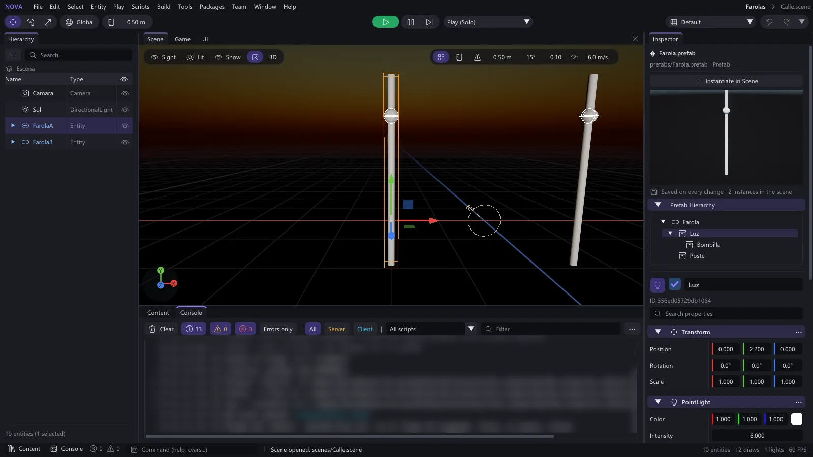

El editor (NovaEditor.exe)
En esta página
- Paneles
- Barra de menús
- Barra de herramientas
- Barra de estado
- Avisos emergentes
- Jerarquía
- Inspector
- Editar un prefab desde el Inspector
- Escena
- Juego
- Interfaz
- Contenido
- Consola
- Pestañas de editor
- Espacio Animación
- Distribuciones
- Tema
- Pantalla de carga
- Recuperar la sesión
- Lo que se guarda
- Al abrir el proyecto
- Si el editor se cerró por un fallo
- En una sesión de edición en equipo
- Preferencias
- Menús del editor
- Seleccionar
- Compilar
- Herramientas
- Ventana: Nivel, Visor y Registros
- Crear en Contenido
- Atajos de teclado
- Cámara del visor Escena
- Gizmos
- Editar el pivote
- Bajar al suelo
- Selección con clic en el visor
- Arrastrar y soltar
- Copiar y pegar
- Modo juego
- Pantalla completa al jugar
- El ratón al jugar
- Modos de juego en red
- Deshacer y rehacer
- Comandos serializables (base de la edición colaborativa)
- Recarga de scripts
- Ajustes del proyecto
- Controles: acciones y ejes
- Preferencias del editor
- Idioma del editor
- Publicar
- Ficheros del editor
- Si el editor se cierra por un error
- Opciones de línea de comandos
- Ver también
Esta guía describe el editor de Nova Engine: sus paneles, los atajos de teclado, la cámara del visor, los gizmos, la selección, arrastrar y soltar, el modo juego (también en red), el deshacer, la recarga de scripts, los scripts en Contenido y el editor de código, los ajustes del proyecto (con los controles), las preferencias del editor (también el idioma: español o inglés), la publicación y las opciones de línea de comandos. Los scripts del juego se escriben en Lua y no se compilan: el editor los recarga al guardarlos (scripts-lua.md).
Paneles#
El diseño por defecto coloca la Jerarquía a la izquierda, el Inspector a la derecha, los visores Escena y Juego en el centro, y Contenido, Consola y el espacio Animación abajo. Los paneles se pueden arrastrar y acoplar donde quieras; Ventana > Distribución tiene otras distribuciones (Animación, Interfaz, Mundo / Terreno), guarda la tuya con un nombre y Restablecer distribución vuelve a colocarlo todo (ver Distribuciones).
Desde la 0.9.24 el editor tiene un tema nuevo, propio de Nova: oscuro, con el violeta de Nova como acento, barras con los botones en «pastillas», Jugar en verde en el centro, avisos emergentes abajo a la derecha y una barra de estado con la Consola y el cajón de Contenido. El de antes sigue como Clásico y hay una variante Clara (ver Tema).
Barra de menús#
| Menú | Opciones |
|---|---|
| Archivo | Nueva escena, Abrir escena..., Guardar escena, Guardar escena como..., Nuevo proyecto..., Abrir proyecto..., Proyectos recientes, Publicar juego..., Salir |
| Editar | Deshacer y Rehacer con el nombre de la acción («Deshacer: crear entidad»), Copiar, Pegar, Duplicar, Eliminar, Encuadrar selección, Ajustes del proyecto..., Preferencias del editor... |
| Seleccionar | Seleccionar todo (Ctrl+A), Quitar selección (Esc), Invertir selección (Ctrl+I), Jerarquía (con sus hijos), Todos del mismo tipo (Ctrl+Mayús+A) y los submenús Por tipo (luces, mallas estáticas, mallas con esqueleto, cámaras, partículas, sonidos, decals), Por clase de script, Por material (el de la selección o uno de la lista), Por etiqueta y Por capa (ver Menús del editor) |
| Entidad | Entidad vacía, Objeto 3D (Cubo, Esfera, Plano, Cilindro, Cápsula, Cono y la opción Con colisionador), Luz (direccional, puntual, foco), Cámara, Entorno (cielo y niebla), Volumen de niebla (ver niebla-volumetrica.md), Interfaz (lienzo, widgets y plantillas de HUD y menús, ver interfaz-ui.md), Efectos (sistema de partículas y preajustes: fuego, humo, explosión, fogonazo, lluvia..., ver particulas.md), Navegación (malla de navegación, agente, obstáculo, enlace y área, ver navegacion.md) y, abajo, Bajar al suelo (Fin), Bajar el pivote al suelo (Mayús+Fin) y Bajar y alinear con el suelo (Alt+Fin) (ver Bajar al suelo) |
| Jugar | Jugar (solo), Jugar como anfitrión, Anfitrión + clientes (1 a 4 ventanas de NovaGame.exe), Por Internet (código) (Nova Enlace) y Copiar el código, Conectar a..., Simular red mala (latencia y pérdida), Argumentos del juego (Application.GetArgs), Detener, Estadísticas de red (F3), Formas de física en el visor y, jugando en red, el estado de la conexión |
| Scripts | Nuevo script... (Lua), Nuevo script C++ (avanzado)..., Compilar scripts (solo para los scripts C++: en un proyecto solo con Lua sale desactivado, con el motivo), Recargar scripts (Ctrl+R: todos los Lua desde el disco y la DLL de los C++ si la hay) y, abajo, «Scripts en Lua: sin compilar» o el módulo C++ cargado |
| Compilar | Compilar todo (iluminación horneada, navegación de todas las superficies, sondas de reflejos y validación, en segundo plano), Iluminación (Solo iluminación, Calidad de la iluminación, Información de iluminación..., Estadísticas de iluminación, Limpiar iluminación), Navegación, Sondas de reflejos, Validar datos y Registro de compilación |
| Herramientas | Buscar en scripts... (Ctrl+Mayús+F), Validar datos, Combinar mallas, Uso de recursos, Idiomas (panel de localización), Etiquetas de juego, Depurar (Perfilador, Visual Logger, Variables de consola, Estadísticas del visor) y Abrir carpeta del proyecto |
| Paquetes | Paquetes del motor...: Primera persona y Tercera persona listas para multijugador, con Instalar / Actualizar / Instalado (ver paquetes.md) |
| Equipo | Crear sesión de equipo..., Unirse a una sesión..., Sesiones recientes y, en una sesión, Panel del equipo, Copiar invitación, Guardar todo, Jugar en equipo..., Resincronizar escena, Abrir carpeta de trabajo, Salir de la sesión y Compilar scripts del equipo (ver edicion-en-equipo.md) |
| Ventana | Distribución (preajustes, las tuyas, guardar y restablecer; ver Distribuciones) y las ventanas por grupos: Escena (Jerarquía, Inspector, Contenido, Cajón de Contenido con Ctrl+Espacio, Consola), Animación (el espacio Animación, con una entrada por pestaña: Animador, Humanoide, Vista previa de clips, Animar huesos y Línea de tiempo), Mundo (Terreno, Navegación, ver navegacion.md, e Iluminación, ver iluminacion-horneada.md), Nivel (Mezclador de luces, Capas y Ajustes del mundo), Interfaz (el creador de interfaz e Idiomas), IA (Árbol de comportamiento), Red y equipo (Panel del equipo y Estadísticas de red), Depuración (Perfilador, ver rendimiento.md, Estadísticas del visor, Formas de física, Variables de consola, Problemas y Visual Logger), Visor (Mostrar barra del visor con Ctrl+Mayús+T, Mostrar interfaz del visor y Visor a pantalla completa con Mayús+F11) y Registros (Registro de mensajes). La Demo de ImGui solo sale con la opción de desarrollador (--dev) |
| Ayuda | Acerca de Nova Engine (con la versión), Documentación (la documentación en HTML; desde el código fuente sin generarla, la carpeta docs), Buscar actualizaciones… (abre Nova Hub, ver instalar.md) |
IA (árboles de comportamiento): Entidad > IA > Agente IA crea un personaje que piensa con un árbol, Ventana >
Árbol de comportamiento abre la ventana del árbol (también con doble clic en un .bt) y Contenido > Crear > Árbol de
comportamiento crea uno. Ver ia-arboles.md.
A la derecha de la barra se ven el proyecto y la escena abierta (Mi juego > Principal.scene); con cambios sin
guardar, la escena sale en amarillo con un asterisco.
Barra de herramientas#
De izquierda a derecha, con los botones agrupados en pastillas:
- Mover / Rotar / Escalar (W / E / R): modo del gizmo; el elegido, con el color de acento.
- Local / Global: espacio del gizmo.
- Imán: ajuste a la rejilla, con el paso al lado (metros, grados o factor de escala según el modo).
- En el centro, Jugar (verde; jugando se vuelve Detener, en rojo), Pausa y Avanzar un frame, y a su lado el modo de juego: Jugar (solo), Jugar como anfitrión, Anfitrión + clientes (con el número de clientes) o Conectar a... (ver Modo juego).
- A la derecha: Compilar scripts (solo en los proyectos con scripts C++; los de Lua no se compilan), el selector de distribución y Deshacer y Rehacer con la lista del historial (ver Deshacer y rehacer).
Barra de estado#
Abajo del todo:
- Contenido: sube o esconde el cajón de Contenido (como Ctrl+Espacio).
- Consola, con el número de errores (rojo) y avisos (amarillo): un clic la enseña.
- Comando: la línea de comandos de la consola del juego (
help,fps,tp,timescale, losRegisterCommandde tus scripts y las variables de consola, con autocompletado e historial). Jugando va a la partida; la salida sale en la Consola. Ver herramientas-lua.md. - El último mensaje (o «Listo») y, en una sesión de equipo, su estado.
- A la derecha, las entidades, los objetos dibujados, las luces y los FPS. En modo juego la barra se pone verde.
Avisos emergentes#
Lo importante sale también como un aviso abajo a la derecha, que se desvanece solo (antes si lo cierras con la X;
con el ratón encima se queda): la escena guardada, un error al guardar, la compilación de los scripts (bien o con
errores), un error en un script Lua al guardarlo, el modo juego sin red, el código de una partida por Internet, la
conexión de una sesión de equipo y sus avisos, y la búsqueda de actualizaciones. Los que tienen algo que hacer llevan
botones: Ver en la Consola, Reintentar (compilar otra vez, volver a jugar), Abrir script (en la línea del
error) o Copiar código. Si el mismo aviso llega varias veces seguidas no se repite: sale una vez con «×3». Todos
quedan también en la Consola y en editor.log («Aviso: ...»).
Jerarquía#
Árbol de entidades de la escena, como un Outliner: buscador arriba, columnas Nombre y Tipo, un ojo por fila y, al pie, «N entidades (M seleccionadas)».
- Tipo: el componente principal de la entidad (Cámara, Luz direccional, Malla, Animador, Cuerpo rígido...). Una entidad sin componentes que tiene hijos hace de carpeta (icono de carpeta, «Carpeta»): sirve para ordenar.
- Ojo: muestra u oculta la entidad (la activa o la desactiva, con sus hijos), con deshacer. Las ocultas se ven en gris con el ojo tachado.
- En una sesión de equipo, el candado con el color de quien está editando una entidad y los puntos de color de lo que tienen elegido los demás.
- Clic: selecciona. Ctrl+clic: añade o quita de la selección. Doble clic: selecciona y encuadra.
- Botón +: crea una entidad vacía, un cubo, una esfera, un plano, una luz puntual o una cámara.
- Buscar: filtra por nombre (muestra una lista plana, con las mismas columnas).
- Clic derecho sobre una entidad: Crear hijo, Renombrar (F2), Duplicar, Eliminar, Crear prefab, Sacar de su padre, Encuadrar.
- Clic derecho en la zona vacía: Crear entidad vacía. Clic en la zona vacía: deselecciona.
- Las entidades inactivas se ven en gris y las instancias de prefab en azul.
Inspector#
Muestra la entidad seleccionada o el asset seleccionado en Contenido.
Sin nada elegido, un mensaje explica qué hacer. Para una entidad:
Cabecera con el icono de su tipo, la casilla de activa y el nombre; debajo, su id.
Buscar propiedades: deja solo los componentes y los campos cuyo nombre (en español o el de Lua) contiene lo escrito; si casa el nombre del componente, se ven todos sus campos. Los componentes que quedan se abren solos.
Los campos van en dos columnas alineadas (nombre | valor), con la columna del nombre redimensionable.
Si es una instancia de prefab, una barra con Seleccionar, Aplicar (guarda la instancia en el prefab y actualiza las demás instancias de la escena, respetando lo que cada una tiene cambiado; un solo Ctrl+Z) y Revertir (ver prefabs.md).
Un bloque por componente, generado por reflexión, con una cabecera clara (icono y nombre en seminegrita) y, a la derecha, el menú ⋮: Restablecer valores, Copiar valores, Pegar valores y Quitar componente (salvo
Transform). El mismo menú sale con clic derecho en la cabecera.Los campos que no tienen efecto con los valores actuales salen desactivados y, con el ratón encima, dicen por qué: el radio de un colisionador de caja, la masa de un cuerpo estático, las distancias de un sonido 2D, el clip de un animador con controlador, los límites de una articulación sin Usar límites, los nueve cortes de una imagen que no es de ese tipo...
Clic derecho en la cabecera de un componente: Restablecer valores (los de un componente nuevo), Copiar valores y Pegar valores (en otro componente del mismo tipo, de esta u otra entidad). Cada uno se deshace con Ctrl+Z y llega a los demás en la edición en equipo. En el componente Scripts, el mismo menú está en cada script (C++ o Lua): clic derecho en su nombre para restablecer sus valores (los que declara el script), copiarlos o pegarlos en el mismo script de otra entidad. Jugando también vale, sin deshacer: el script sigue funcionando con los valores nuevos.
Todo lo que se cambia en el Inspector se aplica al momento, también jugando: la forma o el tamaño de un colisionador rehacen su cuerpo de física, el tono o el bus de un sonido que suena cambian en su voz, otro clip del animador empieza a reproducirse... (ver fisicas.md, audio.md e interfaz-ui.md).
Añadir componente: menú con buscador, agrupado por categorías (General, Render, Luces, Animación, Física, Audio, Red y Scripts; los componentes del juego sin categoría aparecen en "Juego").
En el componente Scripts, Añadir script abre una ventana con buscador (como Añadir componente) con los scripts del proyecto (los Lua de
scripts/y, si los hay, las clases de C++) y los integrados del motor:- el cursor ya está en el buscador: filtra mientras escribes, sin distinguir mayúsculas ni tildes, por nombre y
por carpeta (
ia/Enemigo,ia ene); - flechas y Enter para elegir, Esc para cerrar (o clic en uno);
- cada script muestra si es Lua o C++, su ruta (
scripts/ia/Enemigo.luau) y, si la tiene, la primera línea de comentario del fichero (-- Enemigo que patrulla); - al final, Nuevo script «Nombre.luau» crea un script Lua con lo escrito (
ia/enemigo jefecreascripts/ia/EnemigoJefe.luau) y se lo añade a la entidad; sin nada escrito, abre el diálogo Nuevo script....
Añadirlo se deshace con Ctrl+Z, y cada script del proyecto tiene un botón Abrir script que abre su fichero de
scripts/en el editor de código (con un nombre largo, solo el icono{}; los scripts del motor, como Rotador, no lo tienen).- el cursor ya está en el buscador: filtra mientras escribes, sin distinguir mayúsculas ni tildes, por nombre y
por carpeta (
Soltar un script (
.luau, o.cppo.hde C++) arrastrado desde Contenido en cualquier parte del Inspector se lo añade a la entidad (ver Scripts en Contenido).En el Animador, mientras hay modelo, se ven el estado actual, la fase y los parámetros del controlador, que se pueden cambiar en vivo (los disparadores son botones), los pesos de sus capas, Mostrar huesos (el esqueleto en el visor) y Editar controlador (abre el panel Animación, ver modelos-y-animaciones.md).
En el Enganche a hueso, la lista de huesos, nodos vacíos y sockets del modelo (el de debajo del ratón se resalta en el visor) y Poner en el hueso; en el IK, botones para añadir apuntar con la columna y las manos o los pies con sus huesos adivinados.
Los campos de render (Cámara, luces y sus sombras, Entorno, Malla, Malla con huesos y Material) se aplican al momento en Escena y Juego, sin reiniciar; qué hace cada uno está en render-y-materiales.md y en escenas-y-componentes.md.
Para un asset:
| Tipo | Qué muestra |
|---|---|
| Material | Vista previa y todos sus campos. Los cambios se guardan en el .mat al soltar el control |
| Modelo | Vista previa, Añadir a la escena, mallas, materiales, animaciones (con duración), esqueleto y tamaño |
| Textura | Vista previa, tamaño y número de mips |
| Controlador de animación | Estados, transiciones y parámetros, y un editor del JSON con Guardar |
| Escena | Abrir escena |
| Árbol de comportamiento | Nodos, claves de la pizarra, avisos del árbol, cuántos agentes de la escena lo usan y Abrir en la ventana del árbol |
| Prefab | Instanciar en la escena, una vista previa que se puede girar y cambia al editarlo, la jerarquía del prefab y los componentes de la entidad elegida, editables como los de la escena (con Añadir componente, los scripts y sus campos). Se guarda solo con cada cambio y las instancias de la escena abierta se actualizan en el mismo paso de deshacer; ver Editar un prefab desde el Inspector |
| Sonido (WAV, FLAC, MP3) | Tamaño, duración y Escuchar / Parar |
Editar un prefab desde el Inspector#
Al elegir un .prefab en Contenido, el Inspector lo carga sin instanciarlo y lo deja ver y cambiar entero:
- Vista previa arriba: arrastra para girarla, la rueda acerca y aleja y el doble clic la deja como al principio. Cambia mientras editas.
- Jerarquía del prefab: clic en la raíz o en un hijo para editarlo debajo, con los mismos controles que una entidad de la escena (nombre, activa, cada componente con su menú ⋮, los scripts con sus campos, Añadir script y Añadir componente).
- Se guarda solo con cada cambio terminado (como los materiales): un paso del historial que Ctrl+Z deshace entero. Las instancias de la escena abierta reciben el cambio en ese mismo paso, salvo lo que cada una tenía ya distinto del prefab (sus valores propios) y la posición y el giro de su raíz.
- En la edición en equipo viaja como cualquier cambio; si el fichero cambia por fuera, el Inspector lo vuelve a leer.

Los detalles (qué pasa con cada instancia, referencias, límites) están en prefabs.md.
Escena#
Visor de edición con la cámara libre del editor, la rejilla, los iconos de luces y cámaras, la caja naranja de
la selección, los gizmos y las ayudas de los scripts (OnDrawGizmos) y de los sistemas (OnDebugDraw).
Las formas de física de la selección se dibujan siempre, encima de todo: el colisionador en verde (amarillo si es un sensor), la cápsula de un controlador de personaje y el anclaje y el eje de una articulación. Salen de los componentes, así que cambian en cuanto se toca el colisionador en el Inspector (una malla o una envolvente convexa se dibuja con las aristas de su modelo). La caja naranja es la de la malla que se dibuja, no la del colisionador. Para ver las formas de todos los objetos (y, jugando, las de Jolt con los contactos), activa el botón del rayo (Físicas) o Jugar > Formas de física en el visor.
- Barra flotante translúcida encima de la escena:
- a la izquierda, Vista (Perspectiva, Arriba, Frente, Derecha: gira la cámara alrededor de lo que tiene delante), el modo de vista (Iluminado, como en el juego; Sencillo, sin sombras ni posproceso; Alambre, los objetos opacos en wireframe) y Mostrar (Rejilla, Físicas, Estadísticas y Huesos);
- a la derecha, la rejilla, el imán y los pasos del ajuste al mover, el ángulo al rotar y el paso al escalar (los mismos de la barra de herramientas), y la velocidad de la cámara.
- Estadísticas: resolución, tiempo de frame, objetos dibujados, triángulos, dibujados de sombras, luces, luces con sombra, caras de sombra redibujadas y reutilizadas en el frame, y nombre de la GPU.
- Abajo a la izquierda, los ejes X, Y y Z de la vista sobre un círculo translúcido.
- Fin baja la selección hasta lo que tiene debajo (Mayús+Fin: por el pivote; Alt+Fin: alineada con la superficie). Ver Bajar al suelo.
Juego#
Muestra la escena desde la cámara principal (la primera cámara activa con Principal marcado o, si
ninguna lo tiene, la primera cámara). Sin cámara muestra un aviso. En modo juego, la entrada (teclado, ratón,
mando) solo llega a los scripts mientras este panel tiene el foco, y encima de la imagen se dibuja la interfaz
del juego (los lienzos de pantalla, ver interfaz-ui.md), la de los scripts (OnGUI), los
mensajes de la red y, con F3, las estadísticas de red. Sin jugar también se ve la interfaz del juego. Si el
juego bloquea el cursor, el ratón se queda dentro de este panel hasta que pulses Esc (ver
El ratón al jugar).
Interfaz#
El creador visual de HUD y menús (pestaña junto a Escena y Juego; si la cierras, Ventana > Interfaz). Dibuja el lienzo elegido a la resolución que quieras (16:9, 21:9, 4:3, móvil...) y permite crear widgets y plantillas desde su paleta, moverlos y redimensionarlos con guías e imán, girarlos, anclarlos con los preajustes, alinearlos, agruparlos y meterlos en otro contenedor (Alt al soltar). La pestaña Estilos de la paleta viste la interfaz con un clic con la biblioteca de estilos (militar desgastado, metal oxidado, papel viejo, sci-fi...). Todo se deshace con Ctrl+Z y se guarda con la escena. Sus atajos (con el panel enfocado): flechas para mover 1 px (Mayús: 10), Supr, F (encuadrar), Ctrl+0 (ajustar el lienzo), Ctrl+1 (100 %), Ctrl+G (agrupar) y Ctrl+Mayús+G (desagrupar). Todo el detalle está en interfaz-ui.md. En una sesión de equipo se monta la interfaz entre varios: el panel marca con el color de cada persona lo que tiene elegido y lo que está cambiando (con su arrastre en vivo) y no deja tocar lo que edita otra (ver interfaz-ui.md).
Contenido#
Navegador de la carpeta assets/ del proyecto y de la carpeta scripts/ con los scripts del juego (Lua y, si
los usas, C++). Está fijo abajo y también como cajón que sube con Ctrl+Espacio.
Barra: Añadir (carpeta, material, controlador, escena, script...), Importar... (FBX, OBJ, glTF), Guardar todo (la escena abierta; los demás assets se guardan solos al cambiarlos), refrescar, Buscar y el tamaño de las miniaturas.
Miniaturas grandes y redondeadas, con el icono del tipo en la esquina; lo elegido, con el color de acento.
Árbol de carpetas a la izquierda y rejilla con miniaturas a la derecha (los modelos, materiales y prefabs se renderizan; las texturas se muestran tal cual). Debajo de
assets, el árbol tiene la carpeta scripts (ver Scripts en Contenido).Migas de pan, botón de carpeta superior y Buscar (busca en todo el proyecto: assets y scripts).
Crear: Carpeta, Material, Controlador de animación, Escena (con sol, entorno, cámara y suelo con colisionador) o Script... (un script Lua en
scripts/). Con la carpeta scripts abierta: Nuevo script... (Lua) y Nuevo script C++ (avanzado)....Los ficheros
.oggno se muestran (el formato no se puede reproducir): una línea avisa de cuántos hay en la carpeta. Conviértelos a WAV, FLAC o MP3.Importar FBX...: copia un modelo FBX, OBJ o glTF con sus texturas a la carpeta abierta (también en Archivo > Importar modelo (FBX, OBJ, glTF)..., o arrastrando el fichero al editor). Sus opciones (escala, unidades, eje arriba, animaciones, combinar mallas, colisionador y animaciones de otros ficheros) están en el Inspector: ver Modelos y animaciones.
Botón de refrescar: vuelve a escanear la carpeta (el motor también lo hace solo cada 2 segundos).
Deslizador de tamaño de las miniaturas.
Clic: muestra el asset en el Inspector. Doble clic: abre carpetas y escenas; los scripts (
.luau,.cpp,.h) se abren en el editor de código (ver Preferencias del editor).Clic derecho: Cortar, Copiar, Pegar, Renombrar (F2), Mostrar en el inspector, Mostrar en el Explorador, Copiar ruta y Eliminar (a la papelera); en una carpeta, también Pegar dentro y Nueva carpeta. En el fondo de la rejilla y en las carpetas del árbol: Nueva carpeta y Pegar. Si la unidad no tiene papelera de reciclaje (una unidad de red, algunos pendrives), no se borra nada y la barra de estado lo avisa: nunca se borra para siempre sin preguntar.
Cajón de Contenido#
Ctrl+Espacio (o el botón Contenido de la barra de estado, o Ventana > Cajón de Contenido) sube Contenido desde abajo, por encima de todo, como un cajón: con el árbol de carpetas, el buscador, la barra y todo lo de siempre (arrastrar, selección múltiple, cortar, copiar, pegar, renombrar...).
- Se esconde con Ctrl+Espacio otra vez, Esc, la X o un clic fuera (los menús y diálogos abiertos desde el cajón no lo cierran).
- Arrastra algo fuera del cajón (un modelo, un prefab, un material...): el cajón se vuelve transparente y deja pasar el ratón para soltarlo en la escena, en la Jerarquía o en el Inspector; al soltarlo, se esconde.
- Mientras está abierto, el panel fijo de Contenido dice que está en el cajón.
Organizar: mover, copiar y renombrar#
Los assets y los scripts se pueden ordenar en carpetas sin romper nada:
- Seleccionar varios: Ctrl+clic añade o quita, Mayús+clic selecciona el tramo desde el último clic y arrastrando desde el fondo de la rejilla se dibuja un recuadro (con Ctrl se suma a lo seleccionado). Ctrl+A selecciona toda la carpeta y un clic en el fondo quita la selección.
- Arrastrar a una carpeta: lo seleccionado (modelos, texturas, materiales, prefabs, escenas, audio, scripts y
también carpetas) se suelta en una carpeta de la rejilla, en una del árbol de la izquierda, en el botón de la
carpeta de arriba o en las migas de pan (
assets > modelos > ...).- La carpeta de destino se resalta en azul y la etiqueta del arrastre dice Mover N elementos y a dónde.
- Donde no se puede soltar, el cursor es el de prohibido y la etiqueta dice por qué: meter una carpeta dentro de
sí misma (o de una subcarpeta suya), mover entre
assetsyscripts(son secciones distintas) o soltar en la carpeta en la que ya está. - Arrastrar un asset sigue valiendo para todo lo de antes (a la escena, a la Jerarquía, a un campo del Inspector) y un script a una entidad; la carpeta es un destino más.
- Cortar / Copiar / Pegar (Ctrl+X, Ctrl+C, Ctrl+V con el panel enfocado, o el menú). Lo cortado se ve
atenuado hasta que se pega. Pegar una copia crea assets con Uuid nuevo (con los mismos ajustes de
importación); en la misma carpeta se llama
Nombre 2. - Renombrar (F2 o el menú) ficheros y carpetas de
assets/y descripts/; la extensión se conserva. - Nueva carpeta (menú o Crear > Carpeta): se crea y se empieza a renombrar.
- Si en el destino ya hay algo con ese nombre, pregunta: Reemplazar (lo que había se aparta a
<proyecto>/.nova/contenido-reemplazados/y Ctrl+Z lo devuelve), Conservar los dos (lo nuevo se llamaNombre 2) o Cancelar. - Ctrl+Z / Ctrl+Y (y los botones ↶ ↷ y el historial de la barra) deshacen y rehacen cada movimiento, copia o renombrado como un paso más.
Lo que se conserva al mover o renombrar:
- Assets: van con su
.meta(su Uuid). Las escenas, los prefabs y los campos de los scripts guardan los assets por Uuid, así que todo sigue funcionando. Al mover una carpeta, todo lo de dentro conserva su Uuid. Si mueves la escena de arranque del proyecto o la escena abierta, sus rutas se actualizan. - Modelos: sus texturas externas (las que no van dentro del fichero), el
.mtlde un OBJ, el.binde un glTF y la carpeta<nombre>.fbmde Blender van con el modelo, en la misma posición relativa. Si otro modelo de la misma carpeta usa las mismas texturas, se copian en vez de moverse (el otro modelo no pierde nada). Si en el destino ya hay una textura con ese nombre, se deja la que hay y la barra de estado lo avisa. - Scripts Lua: las escenas los guardan por su ruta (
ia/Enemigo.luau), así que al moverlos o renombrarlos el editor actualiza solo las escenas y los prefabs del proyecto que los usan, la escena abierta (con un paso del historial que también llega a la sesión de equipo), losrequire("./...")de los demás scripts y los del propio script movido, y las cadenas con su ruta exacta (Global("ia/Rondas.luau")). La Consola lista cada cambio. Si un script nombra por su ruta un asset movido (Scene.Load("niveles/Nivel1.scene")), no se cambia: la Consola lo avisa con su línea. - Scripts C++: se mueven tal cual; si un
.cppacaba en una subcarpeta, no se compila (los proyectos compilanscripts/*.cpp) y la barra de estado lo avisa. Cambiar el nombre del fichero no cambia el de la clase. - Edición en equipo: un movimiento llega a los demás como el resto de cambios de ficheros (se borra la ruta vieja
y llega la nueva con su
.meta), con el mismo Uuid, así que sus escenas abiertas no pierden nada.
Scripts en Contenido#
La carpeta scripts del árbol es <proyecto>/scripts, fuera de assets/, con sus subcarpetas: los scripts
Lua del juego (.luau, también .lua) y, en los proyectos con C++, los .cpp y .h que compila Compilar
scripts. Se ve si el proyecto tiene esa carpeta (las plantillas de Nova Hub la traen) o un módulo de scripts C++.
- Los scripts tienen su propio icono y color (los Lua en azul), con la extensión en la esquina, y su nombre completo. Buscar también los encuentra.
- Doble clic: un script Lua se abre en la ventana Scripts, el editor de scripts integrado
(con autocompletado, avisos y depurador; la preferencia Abrir scripts con puede mandarlo a VS Code); uno de C++, en
el editor de código (con VS Code, junto con la carpeta del proyecto). Al crear un script Lua o abrirlo con VS Code, el editor escribe en el proyecto
nova.d.luauynova.docs.json(los tipos y la ayuda de la API para el autocompletado de VS Code con la extensión de Nova y luau-lsp; ver scripts-lua.md). - Clic derecho en la carpeta scripts o en el fondo de la rejilla: Nuevo script..., que pide el nombre
(letras sin tildes, números y
_: es también el nombre de la clase), creaNombre.luauen la carpeta abierta (las subcarpetas valen) desde una plantilla y lo carga en el momento: no hay que compilar nada. Debajo, Nuevo script C++ (avanzado)... crea una clase de C++ (scripts-cpp.md). - Arrastra un script a una entidad de la Jerarquía o al Inspector para añadírselo. Un script Lua se añade al momento; uno de C++ necesita estar compilado (si no, el editor pide compilar primero).
- Guardar un script Lua lo recarga en todas las entidades que lo usan, también jugando (ver Recarga de scripts).
- Clic derecho en un script: Abrir en el editor de código, Mostrar en el Explorador, Copiar ruta (ruta completa), Renombrar... y Eliminar (a la papelera).... Los dos últimos piden confirmación: las escenas guardan los scripts Lua por su ruta, así que las entidades que usaban uno renombrado o borrado lo muestran como «Script Lua con errores o borrado» (sus datos se conservan). Si la unidad no tiene papelera (red, pendrive), no se borra nada y otro diálogo pregunta si se borra para siempre.
- Con la carpeta scripts abierta, los ficheros de código (
.luau,.cpp,.h...) soltados desde el Explorador se copian a esa carpeta (el resto se importa enassets/como siempre). Los que ya existen no se sustituyen, y la barra de estado dice cuáles.
Los scripts C++ tienen algunas reglas más (las subcarpetas no se compilan, NOVA_GAME_MODULE(), IntelliSense):
ver scripts-cpp.md.
Consola#
Mensajes del log del motor, del editor y de tus scripts (los errores de Lua con su fichero, su línea y su pila). El log
completo también se escribe en %LOCALAPPDATA%\NovaEngine\editor.log.
Ir al script y a la línea con un clic. Toda referencia a un script que sale en un mensaje es un enlace (en cian,
subrayado al pasar el ratón): scripts/Jugador.luau:37, scripts/Armas/Pistola.luau:12:5 (con columna, del analizador),
una ruta de C++ con (12,5)...
- Clic: abre el script en el editor de scripts integrado, en su pestaña de documento Scripts, con el cursor en esa línea y columna y la línea resaltada un momento. Si en Preferencias del editor > Editor de scripts > Abrir scripts con elegiste VS Code, lo abre allí.
- Ctrl+clic: lo abre en VS Code (
code <proyecto> -g fichero:línea) aunque la preferencia diga otra cosa. - Doble clic en una fila: abre su primer script.
- Funciona en los errores de compilación y de ejecución de Lua, en los avisos del analizador y en cada línea de la pila:
los mensajes con pila o muy largos tienen un triángulo a la izquierda que los despliega, y cada nivel de la pila
(
scripts/Jugador.luau:14 function Update) es su propio enlace. Log.Info,Log.Warn,Log.Erroryprintllevan al final, atenuado, el script y la línea que los llamó (← scripts/Ladron.luau:13): también es un enlace. El motor lo mira solo al escribir el mensaje.- Jugando en red y en «Jugar en equipo», los mensajes del servidor (
Server:) y de los clientes (Client:) enlazan al script de la carpeta de este PC: si la ruta es de otro PC, del servidor dedicado o de la carpeta de la sesión de otra persona (D:\Servidor\datos\scripts\Banco.luau:8), la Consola busca el mismo script desde la carpetascripts/de tu proyecto y, si no, por su nombre. - Entidades: un nombre entre comillas simples que existe en la escena (
'JugadorLadron', el de los errores de Lua) es un enlace que la selecciona en la Jerarquía (y la encuadra si no estás jugando). - Assets: las rutas de
assets/y las que acaban en un tipo de asset (scenes/Principal.scene,models/caja.glb) muestran el asset en Contenido (su carpeta, elegido y en el Inspector).
Barra de la Consola, de izquierda a derecha:
| Botón | Qué hace |
|---|---|
| Limpiar | Vacía la Consola |
| Contadores de mensajes, avisos y errores | Cuentan también los repetidos; clic para ver u ocultar cada tipo |
| Solo errores | Deja solo los errores (otra vez: todo) |
| Todo / Server / Client | El lado de la red (ver abajo) |
| Todos los scripts | Filtro por script: solo los mensajes que escribió ese script y los errores y avisos que lo nombran (también en la pila) |
| Filtrar | Texto (sin distinguir mayúsculas), también en la pila y en el origen; lo encontrado se resalta |
| ⋯ (opciones) | Auto-desplazar, las opciones de abajo, Exportar todo... / Exportar lo filtrado... a un .txt y volver a mostrar los silenciados |
Repetidos. El mismo mensaje seguido (mismo tipo, lado, texto y origen) sale una sola vez con un contador ×12. Se desactiva con Agrupar repetidos.
Clic derecho en una fila: Copiar el mensaje, Copiar con la pila, Abrir el script (y Abrir en VS Code), Buscar en la documentación (para los errores del motor conocidos, su sección de resolución de problemas: los errores comunes de los scripts Lua, del multijugador o de Nova Enlace) y Silenciar este aviso durante la sesión (deja de verse y de contar para el aviso del visor hasta que cierres el editor o pulses Volver a mostrar los silenciados). Ctrl+C copia la fila elegida con su pila.
Opciones (en ⋯ y en Preferencias del editor > Consola; se guardan en editor.json, "consola"):
- Limpiar al jugar: al pulsar Jugar, la Consola se vacía y solo quedan los mensajes de esa partida.
- Aviso de errores en el visor de juego (activada): mientras juegas, un error grave sale unos segundos arriba a la derecha del visor Juego con su primera línea, cuántos seguidos y Ver en la Consola (lleva a esa fila). No para el juego ni captura el ratón; con el ratón encima no se va. La X lo cierra.
- Pausar al primer error: el juego se pone en pausa con el primer error, para ver la escena tal y como estaba.
- Agrupar repetidos (activada).
- Marca de tiempo: Hora real (por defecto), Tiempo de juego (desde que pulsaste Jugar;
-en lo de antes), Desde que se abrió el editor o ninguna. - Mensajes que se guardan (50.000 por defecto): las filas más viejas se pierden. La lista solo dibuja las filas que se ven y, al llegar mensajes, solo mira los nuevos: con 50.000 no se ralentiza.
Al jugar con red, cada mensaje de los scripts y de la red lleva delante su lado, con color: Server: (naranja), Client: (turquesa) y Host: (violeta, el código común del anfitrión). La regla está en multijugador.md. El filtro Todo / Server / Client deja solo un lado:
- Server: las líneas
Server:yHost:(el anfitrión también es el servidor); - Client: las líneas
Client:(Client 2:...) yHost:; - los mensajes sin lado (sin red, el propio editor) solo salen con Todo.
Filtrar también busca en el prefijo: «client 2» deja las líneas de ese cliente. El prefijo se quita (de la Consola y
de editor.log) en Preferencias del editor > Consola > Mostrar Server:/Client: en los mensajes; el filtro sigue
funcionando.
El panel Problemas (Ventana > Depuración) abre los scripts igual: clic, en su línea en la pestaña Scripts; Ctrl+clic, en VS Code.
Pestañas de editor#
Los editores de assets se abren en pestañas de documento a pantalla completa. Bajo el menú y la barra de herramientas hay una barra de pestañas:
- La primera es el nivel: la escena abierta (con su nombre y un punto si tiene cambios sin guardar). Con ella elegida ves lo de siempre: Jerarquía, Inspector, Escena, Juego, Contenido, Consola y las herramientas del mundo. No se cierra ni se mueve.
- Una por cada editor de asset abierto, con el icono de su tipo, su nombre, el punto de «sin guardar» y su X. Al elegirla, toda la ventana pasa a ser ese editor: su barra de herramientas arriba y sus paneles a los lados, cada uno en su propio dock. Los paneles del nivel no salen.
| Pestaña | Se abre con | Paneles (distribución por defecto) |
|---|---|---|
| Animación | Doble clic en un .controller, .mask, .anim o un modelo con esqueleto; Ventana > Animación |
Subpestañas en su barra: Animador, Humanoide, Vista previa de clips, Animar huesos, Línea de tiempo y Sockets. En Animar huesos: Huesos a la izquierda, Visor en el centro, Detalles, Eventos y Curvas a la derecha y la Línea de claves abajo; en Sockets, su árbol, el visor y sus detalles; las demás ocupan el centro |
| Interfaz | Ventana > Interfaz, crear un lienzo o una plantilla, elegir un elemento de un lienzo | Paleta y Jerarquía del lienzo a la izquierda, el Diseñador en el centro, los Detalles del elemento elegido a la derecha y las Animaciones (la Línea de tiempo del elemento) abajo |
| Scripts | Doble clic en un .luau, «Abrir script» del Inspector, un error de la Consola |
El Código en el centro (una subpestaña por fichero, como siempre), el Esquema (funciones y campos del script; clic para ir) a la izquierda, los Problemas del script y el Depurador a la derecha y Buscar en el proyecto abajo |
| Material | Doble clic en un material por nodos | El Grafo en el centro, la Vista previa y los Detalles del nodo a la izquierda, los Parámetros a la derecha y los Errores y el HLSL abajo |
| Árbol de comportamiento | Doble clic en un .bt |
Paleta a la izquierda, Grafo en el centro, Detalles del nodo y Pizarra a la derecha, Avisos y Depurar abajo |
| Tabla de datos | Doble clic en una .tabla |
La barra de la tabla arriba y la Tabla ocupando todo |
| Fracturar | Doble clic en un .destructible, Ventana > Fracturar |
Los controles de la Fractura a la izquierda y el Visor |
- Varios a la vez: los materiales, los árboles y las tablas tienen una pestaña por asset (dos materiales abiertos son dos pestañas, cada una con su grafo, su vista previa y su selección). Animación, Interfaz, Scripts y Fracturar tienen una sola pestaña: abrir otro asset la cambia de asset (Scripts abre el fichero en otra subpestaña). Abrir algo que ya tiene pestaña la enfoca. No hay modo prefab: un prefab se edita en el Inspector (ver Editar un prefab desde el Inspector) o instanciado en la escena.
- Barra de la pestaña: el nombre, Guardar (cuando el editor tiene cambios que guardar, como los scripts), Mostrar en Contenido, Restablecer distribución y la barra del propio editor (Añadir nodo, Encuadrar, Probar, Nuevo clip...).
- Reordenar arrastrando; cerrar con la X o con el clic central. Si la pestaña tiene cambios sin guardar (scripts), pregunta: Guardar, No guardar o Cancelar. Los materiales, árboles, tablas y lo de Animación se guardan solos con cada cambio.
- Menú contextual (clic derecho): Cerrar, Cerrar las demás, Mostrar en Contenido y Restablecer distribución. La flechita de la izquierda lista todas las pestañas.
- Ctrl+Tab y Ctrl+Mayús+Tab: la siguiente o la anterior. Con el código de un script enfocado, Ctrl+Tab cambia de script (como siempre).
- Cada tipo de editor recuerda su distribución: si mueves o separas sus paneles, se queda así para ese tipo (también al volver a abrir el editor). Restablecer distribución los devuelve a su sitio. Las distribuciones del nivel (Distribuciones) son aparte.
- El cajón de Contenido (Ctrl+Espacio) sale en todas las pestañas; Mostrar en Contenido lo abre con el asset elegido.
- Jugar desde cualquier pestaña enseña la del nivel con el visor del juego. Al parar vuelves a la pestaña donde estabas (si mientras jugabas elegiste otra, te quedas en ella).
- Deshacer por pestaña: Ctrl+Z, Ctrl+Y y los botones de la barra deshacen y rehacen lo de la pestaña elegida (Ctrl+Z en un material deshace en el material aunque lo último fuera en la escena); el historial solo lista sus pasos. La Interfaz y Fracturar cambian entidades de la escena, así que comparten el historial del nivel. Si un paso de otra pestaña cambió las mismas entidades después, la barra de estado dice que primero se deshaga ese.
- Ctrl+S en una pestaña de asset guarda lo suyo (los scripts), o avisa de que ese editor se guarda solo; en la del nivel, la Interfaz y Fracturar guarda la escena.
- Recuperar la sesión guarda y vuelve a abrir las pestañas, su orden, la elegida y su asset (Recuperar la sesión).
- La edición en equipo funciona igual: cada cambio viaja como antes, esté en la pestaña que esté.
- El visor a pantalla completa (Mayús+F11) es el de la escena: funciona con la pestaña del nivel elegida. Los preajustes de distribución Animación e Interfaz abren su pestaña (las distribuciones colocan los paneles del nivel).
- Para las pruebas:
NOVA_PESTANAS=1hace que el editor sin ventana use las pestañas aunque no se pase--pestanas.
Volver al modo antiguo: Editar > Preferencias del editor > Pestañas de editor a pantalla completa (activada de
serie). Desactivada, los editores vuelven a ser ventanas acopladas junto a la escena, como antes de la 0.9.31; lo que
estaba abierto sigue abierto. Sin ventana (pruebas, --hidden) se usa el modo antiguo salvo con --pestanas.
Para quien desarrolla el motor: cómo se añade un editor como pestaña está al principio de editor/pestanas/DocTabs.h
(un tipo en DocKind, su entrada en kKinds con sus paneles y, en el módulo, DrawDocToolbar y DrawDocument con
doctabs::BeginPanel; con varias instancias, DetachInstance / AttachInstance / DestroyInstance de su estado).
Espacio Animación#
Todo lo de animar está en una sola ventana con pestañas, Animación (Ventana > Animación, con una entrada por pestaña). Con las pestañas de editor (de serie) es una pestaña de documento a pantalla completa y sus pestañas van en su barra:
| Pestaña | Qué hace |
|---|---|
| Animador | Controladores (.controller) y máscaras (.mask): parámetros, capas, estados, transiciones y árboles de mezcla (ver modelos-y-animaciones.md) |
| Humanoide | El avatar humanoide de un modelo (qué hueso hace de cada hueso humano, pose de referencia e IK) para reorientar animaciones |
| Vista previa de clips | Los clips de un modelo, también los de otros modelos reorientados con su avatar |
| Animar huesos | Posar un personaje, crear sus animaciones con claves y curvas y poner eventos (ver animar-huesos.md) |
| Línea de tiempo | Animar objetos sin huesos con claves: puertas, ascensores, luces (ver animacion-objetos.md) |
| Sockets | Los sockets de un modelo: puntos con nombre en sus huesos («Arma» en la mano) para los Enganches a hueso, con el gizmo, objetos de vista previa y el personaje animado (ver modelos-y-animaciones.md). Se abre con Editar sockets del Inspector de un modelo, clic derecho > Sockets... en Contenido o Editar sockets... del Enganche a hueso |
- El doble clic en Contenido lleva a la pestaña que toca: un
.controllero un.maskal Animador; un.animde huesos o un modelo con esqueleto a Animar huesos; un.animde objetos a la Línea de tiempo. Los botones de siempre (Editar controlador y Animar huesos en el Animador del Inspector, Abrir en la línea de tiempo, Animar huesos en el menú de la Jerarquía) también abren su pestaña. - Humanoide y Vista previa de clips trabajan con el modelo elegido arriba o con el que eliges en Contenido (en el Inspector de un modelo siguen saliendo las dos secciones).
- La distribución Por defecto deja la ventana abajo, junto a Contenido y la Consola, para ver la escena mientras se anima con la Línea de tiempo; la distribución Animación la pone grande en el centro con la escena a su izquierda.
- Todo funciona como antes en cada pestaña: deshacer y rehacer, grabar, vista previa, atajos (Ctrl+C / Ctrl+V de las claves con la ventana enfocada) y la edición en equipo.
Para quien desarrolla el motor: cómo se añade una pestaña (como «Sockets», la 0.9.24) está al principio de
editor/animation/AnimationWorkspace.h (una línea en kTabs y, si un tipo de asset tiene que abrirse en ella, su caso en
style::AnimTabForAsset).
Distribuciones#
Una distribución es cómo están colocadas las ventanas. Se eligen en el selector de la barra de herramientas (a la derecha) o en Ventana > Distribución:
| Preajuste | Qué deja |
|---|---|
| Por defecto | Jerarquía a la izquierda, Inspector a la derecha, Escena / Juego / Interfaz en el centro y Contenido, Consola y el espacio Animación abajo |
| Animación | El espacio Animación grande en el centro, con la escena a su izquierda |
| Interfaz | El creador de interfaz en el centro (con Escena y Juego en pestañas) |
| Mundo / Terreno | La escena grande y, a la derecha, el Inspector con las herramientas del mundo debajo (Terreno, Navegación, Iluminación) |
- Guardar distribución actual... pide un nombre y guarda cómo están ahora las ventanas; sale en la lista con las demás (con Usar, Sustituir por la actual y Borrar). Un nombre que ya existe se sustituye.
- Restablecer distribución vuelve a colocarlo todo como en la elegida (preajuste o tuya).
- Son tuyas, no del proyecto: se guardan en tus preferencias del editor (
editor.json), con la elegida. En una sesión de equipo cada uno tiene las suyas.
Tema#
Editar > Preferencias del editor > Apariencia > Tema:
- Nova (oscuro), el de serie desde la 0.9.24: grafito azulado muy oscuro con el violeta de Nova (
#8B7BFF) como acento. Se eligió el violeta porque es el color de una nova y de las nebulosas (el nombre del motor), no se confunde con el azul de otros editores, no choca con el verde de Jugar ni con los colores de los ejes (rojo, verde y azul: un acento azul se confundía con el eje Z) y ya era el color del anfitrión («Host:») en la Consola. Los contrastes cumplen WCAG AA: texto 14,6:1, texto atenuado 5,7:1 y acento 5,2:1 sobre el fondo de los paneles. - Clásico: el tema de antes, azul.
- Claro: variante clara del de Nova, con el violeta más oscuro (
#5B4BDB) para que se lea sobre blanco.
Se aplica al momento, solo para ti, y Nova Hub usa el mismo. Los colores, radios y espaciados están en un solo sitio,
sdk/ui/NovaPalette.h (lo usan el editor, Nova Hub y el instalador). La tipografía es Segoe UI (la de Windows), con
Segoe UI Semibold para los títulos y las cabeceras de los componentes y Cascadia Mono (o Consolas) en la Consola; los
iconos son los de Windows (Segoe Fluent Icons o Segoe MDL2 Assets), sin fuentes añadidas.
Pantalla de carga#
Al abrir el editor (desde Nova Hub, desde la línea de órdenes o con doble clic) sale al instante una pantalla de carga: una ventana sin bordes, centrada en el monitor y con las esquinas redondeadas, con la portada de Nova, «Nova Editor - <proyecto>», la versión del motor, el porcentaje y el paso de la carga, una barra fina con el violeta de Nova y el logotipo. La ventana del editor aparece cuando ya tiene su primer frame dibujado y la pantalla de carga se cierra sola.
Las capturas están en capturas-pantalla-carga/ (en la carpeta del código): un paso de cada tipo (carga-scripts.png,
carga-assets.png...), en inglés (en-carga-assets.png) y a 150 % (escala-150.png).
El progreso es el real: avanza con lo que el editor está haciendo de verdad, paso a paso. Cada paso tiene un peso y, si sabe cuánto le falta, avanza dentro de su tramo:
| Paso | Qué hace | Peso |
|---|---|---|
| Iniciando el motor | registros, tipos, Direct3D 11 y audio | 8 % |
| Preparando shaders (n) | los shaders del renderizador (compilados o leídos de la caché); avanza con los que se prepararon la última vez | 14 % |
| Preparando la interfaz | la ventana, ImGui y las fuentes | 4 % |
| Abriendo el proyecto | project.nova, la lista de assets y los idiomas |
6 % |
| Compilando scripts (i/n) | los scripts Lua de scripts/, uno a uno |
14 % |
| Cargando el módulo de C++ | la DLL de scripts C++ (solo si el proyecto la tiene) | 4 % |
| Cargando assets (i/n) | los modelos, materiales, prefabs y controladores que usa la escena de inicio, uno a uno | 26 % |
| Abriendo la escena | la escena de inicio | 8 % |
| Abriendo el editor | el primer frame (y los shaders de lo que se ve) | 16 % |
Los pasos que no tocan se saltan (un proyecto solo con Lua no tiene módulo de C++; sin proyecto, sale la bienvenida) y el porcentaje nunca retrocede. La pantalla va en su propio hilo: se dibuja y responde mientras el editor carga (Windows no la marca como «No responde»; se puede mover arrastrándola).
- Cambiar de proyecto con el editor abierto (Archivo > Abrir proyecto, recientes o la bienvenida) también la enseña, encima del editor y empezando en «Abriendo el proyecto».
- Si la carga falla (un proyecto que no se puede abrir, la carpeta de un juego publicado...), la pantalla se cierra y sale el error de siempre.
- Se desactiva en Editar > Preferencias del editor > Apariencia > Pantalla de carga al abrir (o con
--sin-pantalla-carga/NOVA_SIN_PANTALLA_CARGA=1). Nunca sale sin ventana (--hidden,--capture), al publicar desde la línea de órdenes (--publish,--publish-steam,--comprobar-publicacion) ni con--generar-tipos-lua. - La portada (
editor/recursos/portada.png, junto al editor enbin\recursos) es de Nova: una nova con su anillo de luz violeta y destellos de cuatro puntas (como el logotipo) sobre una nebulosa y unas montañas con niebla. La dibuja por códigotools/portadagen(ruido, degradados, estrellas y resplandor en HDR, con bloom y tonemapping ACES), sin imágenes de nadie. También sale en Ayuda > Acerca de Nova Engine. - Las pruebas la dibujan sin ventana durante la carga real con
--capturar-carga <carpeta>: una captura por paso (carga-scripts.png,carga-assets.png...) y el progreso encarga-progreso.txt.
Recuperar la sesión#
Al cerrar el editor y volver a abrirlo, el editor te ofrece abrir lo que tenías. Y si se cerró por un fallo, también recuperar los cambios sin guardar.
Lo que se guarda#
Por cada proyecto se guarda lo que tenías abierto:
- la escena abierta;
- las pestañas de scripts del editor integrado, en su orden y con la elegida, la posición del cursor, la línea de arriba que se veía (el scroll) y los bloques plegados. Los scripts que abres en VS Code no se guardan: no son del editor;
- la ventana Tabla de datos, con su tabla, su búsqueda y su orden;
- el espacio Animación: la pestaña y lo que mostraba (el
.controllerdel Animador, el modelo de Humanoide y Vista previa, el modelo o el.animde Animar huesos y Sockets, el.animde la Línea de tiempo); - el Árbol de comportamiento abierto y la ventana Fracturar (con su
.destructible, si tenía uno); - Terreno, Interfaz, Perfilador y las estadísticas del visor, si estaban abiertas;
- las pestañas de editor: cuáles había (también varios materiales, árboles o tablas), su orden, la elegida y el asset de cada una;
- la selección de la Jerarquía, la cámara del visor (posición, orientación, velocidad y distancia de órbita), la carpeta abierta de Contenido y la distribución de las ventanas.
Se guarda al cerrar el editor, al cambiar de proyecto y cada 30 segundos en silencio (solo si algo ha
cambiado). Va en tus datos del editor (%LOCALAPPDATA%\NovaEngine\sesiones\<proyecto>-<código>\sesion.json), nunca
dentro del proyecto: no va a git ni a la edición en equipo, y cada persona tiene la suya.
Al abrir el proyecto#
Cuando la ventana del editor ya se ve (después de la pantalla de carga), sale abajo a la derecha, con el estilo de los avisos, «¿Abrir lo que tenías la última vez?» con un resumen («3 scripts, 1 tabla, escena Principal»):
- Abrir lo vuelve a abrir todo. Lo que ya no existe (un script borrado, una tabla renombrada) se salta sin error y se avisa en la Consola.
- No deja el proyecto como se abre siempre (con su escena de inicio).
- Hacerlo siempre sin preguntar: con Abrir, la próxima vez se abre solo.
Si no hay nada que recuperar (un proyecto nuevo, o la última vez no tenías nada abierto), no sale nada. Si abres el editor
con --scene <escena>, esa escena manda sobre la de la sesión.
Si el editor se cerró por un fallo#
Mientras trabajas, el editor hace un autoguardado de seguridad cada 60 segundos (se cambia en las preferencias): copia
la escena con cambios sin guardar y los scripts con cambios sin guardar del editor integrado a tu carpeta de
recuperación (%LOCALAPPDATA%\NovaEngine\recuperacion\<proyecto>-<código>\). No toca tus ficheros: solo copia lo que
cambió desde la última vez.
Al abrir el proyecto, el editor sabe si la última vez no se cerró bien (se cerró por un fallo, se colgó y lo cerraste desde el Administrador de tareas o se fue la luz): entonces la misma ventana añade «Recuperar los cambios sin guardar», con la lista de lo que hay y la hora de cada copia.
- Cada cosa tiene su casilla. Si el fichero en disco cambió después de la copia (lo editaste fuera, o lo trajo git), sale avisado y sin marcar: no se recupera salvo que lo marques, para no pisar algo más nuevo.
- Lo recuperado queda «con cambios»: la escena con el aviso de cambios sin guardar y los scripts como pestañas modificadas. No se escribe nada en disco hasta que guardes; con Ctrl+Z en un script vuelves a lo que hay en disco.
- Si no lo quieres, Descartar (o No). Las copias no se borran al momento: se apartan a la carpeta
anteriorde la recuperación por si acaso, y no se vuelven a ofrecer. Si cierras el editor sin contestar, se ofrecen otra vez. - Si cierras el editor con normalidad, las copias se borran (lo que no guardaste ya lo contestaste al cerrar).
El aviso del informe de errores (Si el editor se cierra por un error) sale antes, al arrancar; la recuperación sale después, con el proyecto ya abierto.
En una sesión de edición en equipo#
En la edición en equipo la escena vive en el servidor del proyecto del equipo, que la guarda, y cada persona trabaja en su carpeta de trabajo. Las reglas son:
- La escena de la sesión no se autoguarda ni se recupera, para nadie: si tu editor se cierra, al volver a entrar la sesión sigue en el servidor (y si el que se cierra es el anfitrión, el servidor sigue abierto y guarda). Tampoco se vuelve a abrir la escena de la sesión anterior: la escena es la que tenga la sesión.
- Cada persona solo autoguarda y recupera sus propios scripts, en sus datos del editor y con la clave de la carpeta que tenía abierta (la del proyecto del anfitrión o tu carpeta de trabajo). Un miembro nunca ve ni recupera las copias del anfitrión, ni al revés, y nada se escribe en disco hasta que esa persona guarda; si el script cambió en la sesión después de la copia, sale como «más nuevo en disco» y sin marcar.
- Las pestañas, la selección y la cámara sí se recuperan (son solo tuyas).
- Dos editores con el mismo proyecto en el mismo PC: el segundo no guarda la sesión ni hace copias de seguridad (lo dice en la Consola), para no pisar las del primero.
Preferencias#
En Editar > Preferencias del editor > Sesión:
- Recuperar lo que tenías al abrir: Preguntar (de serie), Siempre (se abre solo) o Nunca. La recuperación tras un fallo se ofrece siempre, también con «Nunca».
- Autoguardado de seguridad (s): cada cuánto se hacen las copias (60 s de serie; de 10 s a una hora).
- Vaciar la recuperación: borra las copias de seguridad de todos los proyectos (también las apartadas). No toca los ficheros de los proyectos.
Limitaciones: el autoguardado copia la escena sin los cambios de los terrenos que aún no se han guardado en sus ficheros
.terrain, y una escena muy grande puede tardar un momento en copiarse (en el hilo del editor, solo si cambió).
Menús del editor#
Desde la 0.9.31 la barra de menús tiene Seleccionar, Compilar y Herramientas, y Ventana tiene los grupos Nivel, Visor y Registros. Todo está en editor/menus.
Seleccionar#
- Seleccionar todo, Quitar selección e Invertir selección cambian la selección de la escena abierta, como un clic en la Jerarquía. Ctrl+A, Esc y Ctrl+I funcionan con el visor Escena o la Jerarquía delante (en Contenido, Ctrl+A sigue seleccionando sus ficheros).
- Jerarquía (con sus hijos) añade todos los descendientes de lo seleccionado.
- Todos del mismo tipo (Ctrl+Mayús+A) elige las entidades del mismo tipo que la columna Tipo de la Jerarquía: luz puntual, malla, cámara, personaje...
- Por tipo (con cuántas hay de cada uno), Por clase de script, Por material (los
.matpuestos en el Inspector; «El de la selección» elige todo lo que comparte alguno de sus materiales), Por etiqueta (componente Etiquetas) y Por capa.
Las capas de Nova son las de la física: la del cuerpo rígido (o «Auto»: estático o dinámico), la de un colisionador sin cuerpo (estático, o sensor si es trigger) y la del personaje (jugador). La ventana Ventana > Capas las enseña con cuántas entidades tienen, las selecciona y las oculta o muestra (desactiva o activa sus entidades, con deshacer).
Compilar#
Compilar todo hace, uno detrás de otro y sin bloquear el editor: hornear la iluminación (la escena tiene que estar guardada; ver iluminacion-horneada.md), hornear la navegación de cada «Malla de navegación» activa, volver a capturar las sondas de reflejos y validar los datos (el panel Problemas). Lo que pasa queda en Ventana > Registro de mensajes > Compilar todo; si algo falla sale un aviso. Mientras compila, el menú ofrece Cancelar compilación; al pulsar Jugar se cancela.
Cada paso también va suelto: Iluminación > Solo iluminación, Navegación y Sondas de reflejos. Calidad de la iluminación (Borrador, Media, Alta) es la del proyecto, la misma del panel Iluminación. Estadísticas de iluminación cuenta las luces por modo (tiempo real, mixta, horneada), las mallas estáticas, los volúmenes de sondas y las sondas de reflejos, y del último horneado su fecha, calidad, texturas, memoria de vídeo, texeles, sondas y rayos.
Herramientas#
- Buscar en scripts... (Ctrl+Mayús+F) busca un texto en todos los scripts del proyecto; los resultados salen en Buscar en el proyecto del editor de scripts (un clic abre el script en la línea).
- Validar datos comprueba la escena, los prefabs y los scripts y abre Problemas.
- Combinar mallas (como Merge Actors) junta las mallas estáticas de lo seleccionado (y de sus hijos) en un modelo
nuevo,
Combinado.glbjunto a la escena, con una submalla por material. La entidad Combinado queda en el centro de las de origen, a ras del suelo, con los.matque tenían en el Inspector; las de origen se desactivan. Todo es un solo paso de deshacer. Los materiales de dentro de un modelo pasan con su color pero sin sus texturas (sale un aviso): ponles un.mat. Las mallas con esqueleto no se combinan, y los colisionadores no se copian (ponle uno a la combinada). - Uso de recursos: memoria del editor, texturas y mallas cargadas en la GPU (con la lista de las texturas más grandes), la iluminación horneada, las entidades y los assets del proyecto.
- Idiomas (panel de localización), Etiquetas de juego (gestor de etiquetas), Depurar (Perfilador, Visual Logger, Variables de consola, Estadísticas del visor) y Abrir carpeta del proyecto.
Ventana: Nivel, Visor y Registros#
- Mezclador de luces: todas las luces de la escena en una tabla, con su tipo, encendida, color, intensidad, alcance, sombras y modo de horneado. Cada cambio es un paso de deshacer (un arrastre entero, uno solo) y llega a los demás en la edición en equipo. Clic en el nombre para seleccionarla.
- Capas: ver Seleccionar.
- Ajustes del mundo: la gravedad y el paso fijo del proyecto, el Entorno de la escena (seleccionarlo o crearlo), si la iluminación está horneada y cuántas superficies de navegación hay.
- Mostrar barra del visor (Ctrl+Mayús+T) y Mostrar interfaz del visor (sin ella, el visor Escena solo enseña la escena: ni la barra, ni los ejes, ni las estadísticas). Se recuerdan mientras el editor está abierto.
- Visor a pantalla completa (Mayús+F11): el visor Escena ocupa toda la ventana, sin paneles, para editar. Esc o Mayús+F11 vuelven con la distribución intacta. Jugando, la vista Juego tiene su propia pantalla completa (F11).
- Registro de mensajes (como el Message Log): pestañas con Compilar todo, Validación (los problemas del panel Problemas; clic para ir a la entidad) y los avisos y errores del registro agrupados por de dónde vienen: Importación, Compilación y scripts, Iluminación y navegación, Assets, Red y Otros.
Las distribuciones se cargan, guardan y borran en Ventana > Distribución (ver Distribuciones).
Crear en Contenido#
El botón Añadir y el clic derecho en el fondo de la rejilla (Crear) tienen arriba Importar a esta carpeta... (modelos con sus texturas, texturas, sonidos y fuentes) y lo más usado (Escena, Material, Script Lua...), y después las categorías: Animación (Controlador de animación, Máscara de avatar, Clip de propiedades), IA (Árbol de comportamiento), Datos (Data Asset, Tabla de datos, Enum, Curva), Efectos (Material de decal), Materiales (Material, Material por nodos), Escenas y Scripts (Lua y C++).
Atajos de teclado#
| Atajo | Acción | Dónde funciona |
|---|---|---|
| Ctrl+Espacio | Subir o esconder el cajón de Contenido | Todo el editor (no mientras escribes) |
| Ctrl+Tab / Ctrl+Mayús+Tab | La pestaña de editor siguiente o la anterior | Todo el editor (con el código de un script enfocado, cambia de script) |
| W | Gizmo de mover | Visor Escena (con el ratón encima o enfocado) |
| E | Gizmo de rotar | Visor Escena |
| R | Gizmo de escalar | Visor Escena |
| F | Encuadrar la selección | Visor Escena y Jerarquía |
| Supr | Eliminar la selección | Visor Escena y Jerarquía |
| Fin | Bajar al suelo: cada entidad elegida baja hasta que la base de sus límites toca lo que tiene debajo | Visor Escena y Jerarquía (con la pestaña del nivel; en el editor de scripts, Fin sigue yendo al final de la línea) |
| Mayús+Fin | Bajar el pivote al suelo | Visor Escena y Jerarquía |
| Alt+Fin | Bajar y alinear con la superficie (su eje Y sigue la normal) | Visor Escena y Jerarquía |
| F2 | Renombrar | Jerarquía y Contenido |
| Ctrl+C | Copiar la selección al portapapeles | Todo el editor (con Contenido enfocado, copia sus ficheros) |
| Ctrl+X | Cortar ficheros y carpetas | Contenido |
| Ctrl+V | Pegar entidades del portapapeles | Todo el editor (con Contenido enfocado, pega sus ficheros en la carpeta abierta) |
| Ctrl+A | Seleccionar toda la carpeta (en Contenido) o todas las entidades (Seleccionar todo) | Contenido; visor Escena y Jerarquía |
| Esc | Quitar la selección | Visor Escena y Jerarquía (sin un menú abierto) |
| Ctrl+I | Invertir la selección | Visor Escena y Jerarquía |
| Ctrl+Mayús+A | Todos del mismo tipo que lo seleccionado | Todo el editor (menos Contenido) |
| Ctrl+Mayús+F | Buscar en scripts | Todo el editor (en la ventana Scripts, su «Buscar en el proyecto») |
| Ctrl+Mayús+T | Mostrar u ocultar la barra del visor | Todo el editor |
| Mayús+F11 | Visor a pantalla completa (Esc o Mayús+F11 vuelven) | Todo el editor, sin jugar |
| Ctrl+D | Duplicar la selección | Todo el editor |
| D (mantener) | Editar pivote: el gizmo mueve el pivote de la entidad, no la entidad (Editar el pivote) | Visor Escena |
| Ctrl+Z | Deshacer | Todo el editor: Escena, Inspector, Jerarquía, Terreno, Interfaz, Línea de tiempo, Animar huesos... (no en modo juego ni en mitad de un arrastre). En un campo de texto, deshace lo escrito |
| Ctrl+Y o Ctrl+Mayús+Z | Rehacer | Todo el editor, igual que Ctrl+Z. En un campo de texto, rehace lo escrito |
| Ctrl+S | Guardar la escena (en una pestaña de asset, lo suyo) | Todo el editor (no en modo juego) |
| Ctrl+Mayús+S | Guardar la escena como... | Todo el editor |
| Ctrl+N | Nueva escena | Todo el editor |
| Ctrl+O | Abrir escena... | Todo el editor |
| Ctrl+Mayús+N | Entidad vacía | Todo el editor |
| Ctrl+P | Jugar / detener | Todo el editor (también con el ratón capturado por el juego) |
| Ctrl+B | Compilar scripts (solo los C++; en un proyecto solo con Lua avisa de que no hace falta) | Todo el editor |
| F3 | Mostrar u ocultar las estadísticas de red | Panel Juego (en modo juego) |
| F11 | Pantalla completa al jugar: entrar o volver al editor sin parar el juego (también Esc para volver) | En modo juego |
| º o F1 | La consola del juego (herramientas-lua.md) | Panel Juego (en modo juego) |
| Esc | En modo juego, con el ratón capturado: lo libera (el Esc también llega al juego). Con Mayús+Esc en las Preferencias, solo Mayús+Esc | Panel Juego |
| Alt+F4 | Salir (pregunta si hay cambios sin guardar) | Todo el editor |
Los atajos no actúan mientras escribes en un campo de texto. W, E y R no cambian el gizmo mientras mantienes pulsado el botón derecho, porque entonces W y E mueven la cámara. Con el ratón capturado por el juego, las teclas son del juego: solo funcionan Ctrl+P y la tecla que libera el ratón.
Si la escena tiene cambios sin guardar, Nueva escena (Ctrl+N), Abrir escena (Ctrl+O, el menú, el Inspector o soltar una escena en el visor), abrir otro proyecto y salir preguntan antes si quieres guardarlos (Sí guarda, No los descarta y Cancelar no hace nada).
Cámara del visor Escena#
| Control | Acción |
|---|---|
| Botón derecho mantenido + mover el ratón | Mirar alrededor |
| Botón derecho + W A S D | Volar hacia delante, atrás y a los lados |
| Botón derecho + Q / E | Bajar / subir |
| Mayús (con el botón derecho) | Volar 3 veces más rápido |
| Rueda (con el botón derecho) | Cambiar la velocidad de vuelo (de 0,2 a 200 m/s) |
| Botón central mantenido | Desplazar la vista |
| Alt + botón izquierdo | Orbitar alrededor del punto que tienes delante |
| Rueda (sin botón derecho) | Acercar o alejar |
| F | Encuadrar la selección |
Mientras vuelas, el visor muestra la velocidad actual.
Gizmos#
- Mover: arrastra una flecha para moverte en un eje o uno de los cuadrados entre ejes para moverte en un plano.
- Rotar: arrastra uno de los tres anillos.
- Escalar: arrastra un eje para escalar en ese eje o el centro (horizontalmente) para escalar por igual. El gizmo de escala siempre usa los ejes locales.
- Local / Global: con Local los ejes del gizmo siguen la rotación de la entidad en el mundo (la suya y la de sus padres): mover y rotar van por sus ejes. Con Global son los ejes del mundo, aunque la entidad o su padre estén girados.
- Ajuste (imán): con el imán activo, mover avanza en pasos de 0,5 m, rotar en pasos de 15° y escalar en pasos de 0,1 (valores por defecto, editables junto al imán). Los pasos cuentan desde donde empezó el arrastre, en el eje del gizmo (de la entidad en Local). Mantener Ctrl mientras arrastras invierte el ajuste: lo activa si está apagado y lo desactiva si está encendido.
- Con varias entidades seleccionadas, el gizmo está en la última seleccionada y el resto la sigue: al mover se desplazan lo mismo; al rotar giran todas alrededor del gizmo (en el mismo eje); al escalar cada una escala en sus propios ejes por el mismo factor. Si eliges una entidad y también a su padre, el hijo va con el padre (no se mueve dos veces).
- Con una spline seleccionada, el gizmo mueve, gira y escala sus puntos (elegidos con clic, varios con Ctrl o Mayús) con los mismos botones, atajos, Local / Global e imán; en Local los ejes son los del punto a lo largo de la curva. Ver splines-carreteras-rios.md.
Editar el pivote#
El pivote es el punto sobre el que una entidad gira y escala: su origen, donde sale el gizmo. Desde la 0.9.24 se puede mover sin mover el objeto y sin meterlo en una entidad vacía. El caso típico: una puerta (un Cubo escalado o un modelo) que debe girar por la bisagra y no por el centro.
En el visor Escena: pulsa el botón de Editar pivote de la barra flotante (junto al imán) o mantén D con el ratón en el visor. Con una entidad elegida, sale la caja de lo que se ve (naranja) con el pivote marcado y el gizmo de mover sobre él: arrástralo y el objeto se queda donde está. El imán ajusta los pasos como siempre (Ctrl lo invierte). Al soltar, es un paso del historial.
En la Jerarquía, clic derecho en la entidad > Pivote:
| Opción | Dónde queda el pivote |
|---|---|
| Al centro | En el centro de su caja |
| A la base | En el centro de la cara de abajo (para apoyarla en el suelo) |
| Arriba, A la izquierda (-X), A la derecha (+X), Detrás (-Z), Delante (+Z) | En el centro de esa cara. Una puerta con el pivote a la izquierda o a la derecha gira por ese lado sobre el eje Y: es la bisagra |
| A una esquina o un borde | En un borde vertical (bisagra en el borde de atrás o de delante) o en una de las 8 esquinas |
| Al origen del modelo | Donde lo puso quien hizo el modelo (deshace todo lo anterior) |
| Editar pivote en el visor | Activa el modo del visor (lo mismo que el botón o la tecla D) |
La caja es la de su malla, sus colisionadores y sus hijos, en los ejes de la entidad (aunque esté girada o escalada).
Dónde se guarda y por qué. En la propia entidad: su Transform pasa a estar en el pivote nuevo y la malla se desplaza al
revés con el campo Desplazamiento (pivote) del componente Malla (meshOffset en Lua; se puede escribir a mano). A
la vez, el centro de sus colisionadores y la posición de sus hijos se compensan, así que nada de lo que se ve se
mueve. Se eligió así, y no con un desplazamiento en la importación del modelo, porque:
- vale para las primitivas (un Cubo no tiene
.meta) y cada copia puede tener su pivote; - no mueve los objetos de otras escenas que usan el mismo modelo;
- las escenas de antes no cambian (el desplazamiento es 0);
- el render, la iluminación horneada, la navegación y el suelo de las splines dibujan y miden la malla con su desplazamiento, y las físicas siguen pegadas a la malla porque su colisionador se compensa;
- es un cambio normal de la entidad: deshacer y rehacer, prefabs, duplicar y la edición en equipo funcionan como con cualquier campo.
Ten en cuenta:
- Lo que está en el origen de la entidad pasa al pivote nuevo: una luz, un sonido, el punto de un Enganche a hueso enganchado a ella o el centro de un Cuerpo rígido (el de masa se calcula de su forma, que no se mueve).
- Las mallas con huesos (y las entidades con Animador) no tienen pivote propio: su malla siempre se dibuja en el origen. Mételas en una entidad vacía y gira esa.
- Fracturar respeta el pivote: los trozos quedan donde se veía la malla (el desplazamiento se guarda en el asset).
Bajar al suelo#
Con el visor Escena o la Jerarquía enfocados, Fin baja en vertical cada entidad elegida hasta que se apoya en lo que tiene debajo, sin arrastrarla con el gizmo. También en Entidad > Bajar al suelo.
| Atajo | Qué baja |
|---|---|
| Fin | La base de sus límites: lo más bajo de la caja en el mundo de sus mallas (con sus vértices de verdad) y sus colisionadores, incluidos los de los hijos, queda tocando la superficie más alta que haya debajo de su huella |
| Mayús+Fin | El pivote (el origen de la entidad, donde sale el gizmo) hasta el suelo que tiene justo debajo |
| Alt+Fin | Como Fin, pero además la gira para que su eje Y siga la normal de la superficie (conserva su giro alrededor de ese eje) y la deja de plano contra ella: un cubo en una rampa queda apoyado en su cara, no en una esquina |
Qué es suelo, de lo más alto a lo más bajo que haya debajo:
- los colisionadores de las demás entidades, con su forma (caja, esfera, cápsula, cilindro y malla; la envolvente convexa se mira como su malla). Los sensores no cuentan;
- las mallas de la escena que no tienen colisionador (rayos contra sus triángulos). Las de un cuerpo rígido dinámico o un personaje no cuentan sin colisionador;
- el terreno;
- y, si no hay nada y la entidad está por encima, el plano Y = 0.
Se ignoran la propia entidad, sus hijos y las otras elegidas que aún no han bajado: se bajan de abajo arriba, así que varias cajas apiladas y elegidas a la vez quedan una encima de otra. Si debajo no hay nada (por debajo de Y = 0 y sin suelo), la entidad no se mueve y la barra de estado lo dice. Una entidad un poco hundida en el suelo (unos centímetros) sube hasta apoyarse en él.
- Un solo paso de deshacer para toda la selección: «Bajar al suelo (3 entidades)». En una sesión de edición en equipo viaja como cualquier cambio de Transform; lo que está editando otra persona no se mueve (la barra de estado dice por qué) y sirve de suelo para lo demás.
- Con padre: se calcula en el mundo y se escribe el Transform local. Si eliges una entidad y su padre, baja el padre (el hijo va con él).
- Solo con la pestaña del nivel: en las pestañas de editor de un asset no hace nada. En el editor de scripts, con el código enfocado, Fin sigue yendo al final de la línea.
- Jugando, mueve la entidad como el gizmo (sin historial).
Límites: la huella se mira con una rejilla de rayos verticales (de 3 x 3 a 9 x 9 según su tamaño), así que algo muy estrecho entre dos rayos (un poste fino bajo una mesa grande) puede no verse. Con Alt+Fin, el plano de apoyo es el de la superficie en el centro de la huella. El terreno elegido no se baja (es el suelo).
Selección con clic en el visor#
Un clic (sin arrastrar) sobre un objeto lo selecciona. Si el objeto pertenece a un modelo importado (una entidad con Animador) o a una instancia de prefab:
- El primer clic selecciona la raíz del modelo o del prefab.
- Un segundo clic sobre el mismo objeto selecciona la entidad hija que tiene la malla.
Ctrl+clic añade o quita de la selección. Un clic en el vacío deselecciona. La entidad seleccionada desde el visor se muestra y se despliega en la Jerarquía.
Arrastrar y soltar#
| Qué arrastras | Dónde lo sueltas | Resultado |
|---|---|---|
Modelo (.glb, .gltf, .fbx, .obj) desde Contenido |
Visor Escena | Se instancia apoyado (la base de su caja) en lo que hay bajo el ratón (mallas de la escena y terreno; si no hay nada, el plano y = 0): raíz con Animador (si tiene animaciones o huesos) e hijos con las mallas. Si el modelo es enorme, la barra de estado avisa de que quizá está en centímetros |
| Prefab desde Contenido | Visor Escena | Se instancia apoyado en lo que hay bajo el ratón (como un modelo). Una app de tu PC (Nova IA) puede hacer lo mismo sin arrastrar: enlace-ia.md |
| Prefab desde Contenido | Una entidad de la Jerarquía | Se instancia como hija de esa entidad |
| Modelo desde Contenido | Una entidad de la Jerarquía | Se instancia como hijo de esa entidad |
| Material desde Contenido | Un objeto en el visor Escena | Sustituye los materiales de su Malla (o Malla con huesos) por ese material en todas sus submallas |
| Escena desde Contenido | Visor Escena | Abre la escena |
| Asset desde Contenido | Un campo de asset del Inspector | Asigna el asset si es del tipo que acepta el campo |
| Entidad desde la Jerarquía | Otra entidad de la Jerarquía | La convierte en hija (conserva su posición en el mundo) |
| Entidad desde la Jerarquía | Borde superior de otra entidad | La coloca delante, como hermana |
| Entidad desde la Jerarquía | Zona vacía de la Jerarquía | La saca a la raíz |
| Prefab o modelo desde Contenido | Zona vacía de la Jerarquía | Se instancia en la raíz de la escena |
| Entidad desde la Jerarquía | Un campo de entidad (EntityRef) del Inspector |
Asigna la referencia |
Script (.luau de la carpeta scripts, o .cpp/.h de C++) desde Contenido |
Una entidad de la Jerarquía o el Inspector de la entidad seleccionada | Le añade ese script (y el componente Scripts si no lo tiene), con deshacer. Un script de C++ que aún no está compilado pide compilar primero (Ctrl+B) |
| Uno o varios ficheros o carpetas desde Contenido | Una carpeta de la rejilla o del árbol, el botón de la carpeta de arriba o las migas de pan | Se mueven ahí con su .meta (mismo Uuid), con deshacer. Ver Organizar |
| Ficheros desde el Explorador de Windows | Cualquier parte de la ventana del editor | Se copian a la carpeta actual de Contenido (sin sobrescribir) y se registran con su .meta. Con la carpeta scripts abierta, los scripts (Lua o C++) se copian a esa carpeta. Soltados sobre una carpeta de Contenido (rejilla, árbol o migas de pan), se importan en esa carpeta. Una carpeta del Explorador se copia entera |
Si arrastras una entidad que forma parte de la selección, se mueve toda la selección.
Copiar y pegar#
- Ctrl+C (o Editar > Copiar) copia al portapapeles las entidades seleccionadas con todos sus hijos, en JSON. Si seleccionas un padre y uno de sus hijos, el hijo no se copia dos veces.
- Ctrl+V (o Editar > Pegar) crea las entidades copiadas en la raíz de la escena actual, con UUID
nuevos, y las selecciona. Las referencias (
EntityRef) entre las entidades pegadas se reasignan a las copias. - Como el texto queda en el portapapeles de Windows, puedes pegar en otra escena o en otra instancia del
editor. El texto es un JSON con la clave
"nova": "entidades"; si el portapapeles contiene otra cosa, Ctrl+V no hace nada. - Ctrl+D (duplicar) es distinto: crea la copia junto al original, con el mismo padre.
Modo juego#
- Ctrl+P o el botón de reproducir. El editor hace una copia de la escena (pasando por JSON), crea los
scripts (
AwakeyStarten Lua;OnCreateyOnStarten C++) y empieza a actualizarla. - Puedes inspeccionar y modificar la copia, pero al parar se descarta: la escena de edición queda como estaba. El Inspector lo recuerda con "(cambios temporales: modo juego)".
- Pausa congela la escena y Avanzar un frame ejecuta un solo frame. Jugando en red, la conexión sigue viva durante la pausa (se reciben y envían mensajes, sin simular): nadie se desconecta por tiempo agotado.
- Con la ventana del editor minimizada, una partida en red sigue jugándose (sin dibujar).
- El deshacer y el guardado de la escena están desactivados mientras juegas.
- La entrada solo llega al juego con el panel Juego enfocado. Si un script bloquea el cursor, el ratón se captura en ese panel y Esc lo libera (ver El ratón al jugar).
- Las físicas y el audio funcionan en el modo juego: los cuerpos se crean al pulsar Jugar y los sonidos suenan por la tarjeta de sonido. Jugar > Formas de física en el visor dibuja los colisionadores en el visor Escena (también sin jugar).
- En Pausa, los cambios del Inspector a los componentes de física (y lo que muevas con el gizmo) se aplican ya a los cuerpos, y los sonidos se pausan con el juego.
Pantalla completa al jugar#
En el desplegable del modo de juego (junto a Jugar) y en el menú Jugar, Pantalla completa al jugar: al pulsar
Jugar, la vista Juego ocupa todo el monitor donde está el editor (ventana sin bordes), sin paneles ni barras, como el
juego publicado a pantalla completa: el ratón se captura igual, el juego ve la resolución del monitor (Screen y la
interfaz escalada) y los FPS son los de ese tamaño.
- F11 lo alterna en cualquier momento mientras juegas (con el depurador de scripts parado, F11 es «entrar en la función» y se vuelve al editor solo).
- Esc o F11 vuelven al editor sin parar el juego; Ctrl+P para el juego.
- Al detener el juego se vuelve al editor tal como estaba: el dock y las ventanas no cambian (mientras tanto no se dibujan).
- La opción se guarda en tus preferencias del editor (
editor.json,"pantallaCompletaAlJugar").
El ratón al jugar#
Si el juego bloquea el cursor (Input.SetCursorLocked(true) en Lua, GetInput().SetCursorLocked(true) en C++), el
editor captura el ratón en la vista Juego:
- El cursor no se ve, se queda encerrado dentro de la imagen del juego (no puede salir a otros paneles ni a otras ventanas) y vuelve a su centro en cada frame. El juego recibe el movimiento sin límites (raw input), así que mirar alrededor funciona aunque el cursor no se mueva.
- Ningún clic llega a la interfaz del editor (ni a la barra, ni a la Jerarquía, ni al Inspector), y los atajos del editor no actúan (Ctrl+D, Ctrl+Mayús+S...): las teclas son del juego. Ctrl+P sí detiene la partida.
- Arriba de la vista sale un momento el aviso «Esc: liberar el ratón».
Se captura en cuanto el juego lo bloquea si el panel Juego tiene el foco (al pulsar Jugar lo tiene) o, si no, con un clic en la vista.
Esc libera el ratón: vuelve a verse, puedes sacarlo de la vista y usar el editor, y el juego deja de recibir el ratón (sigue en marcha y recibe el teclado mientras el panel Juego tenga el foco). Ese Esc también le llega al juego, así que su menú de pausa funciona igual. Para volver, haz clic en el juego: ese clic no le llega (no dispara). El aviso «Haz clic en el juego para volver a capturar el ratón» lo recuerda unos segundos, y otra vez al pasar el ratón por encima de la vista; la barra de estado también lo dice.
El ratón también se libera al cambiar de ventana (Alt+Tab o un diálogo de Windows), al pulsar Pausa o
Avanzar un frame, al abrirse un diálogo modal del editor y al detener la partida. Después solo se vuelve a
capturar con un clic en el juego, nunca solo (en pausa, ni con el clic). Si el juego suelta el cursor
(SetCursorLocked(false), por ejemplo al abrir su menú de pausa), el ratón vuelve a ser tuyo; cuando lo vuelva a
bloquear (su botón Continuar), se captura otra vez sin clic. IsCursorLocked() devuelve siempre lo que pidió
el juego, aunque el editor haya liberado el ratón.
Si el juego solo oculta el cursor sin bloquearlo (SetCursorVisible(false), juegos con puntero propio), el
cursor se oculta y se queda dentro de la vista, pero no se centra (el juego usa su posición) y su interfaz sí
recibe los clics. Esc y el clic funcionan igual.
En Editar > Preferencias del editor > Jugar:
- Tu nombre en las partidas: con el que entras al jugar desde el editor (lo ven los demás, el chat y los avisos «se ha unido»). Vacío: tu usuario de Windows. En una sesión de equipo se usa tu nombre de la sesión.
- Capturar el ratón al jugar (activado por defecto). Desactivado, el cursor nunca se oculta ni se encierra y el juego recibe el ratón mientras el panel Juego tiene el foco.
- Liberar el ratón con: Esc (por defecto) o Mayús+Esc, para los juegos que usan Esc. Con Mayús+Esc, el Esc solo es del juego y el Mayús+Esc que libera el ratón no le llega.
- Mostrar el aviso en la vista Juego.
Con Anfitrión + clientes, cada ventana de NovaGame.exe captura y libera su ratón por su cuenta con las
mismas reglas y la misma tecla. El juego publicado no tiene tecla para liberar el ratón (Esc es del juego): el
cursor bloqueado se queda en su ventana mientras tiene el foco, se suelta con Alt+Tab y vuelve al volver a ella.
Modos de juego en red#
El desplegable junto al botón de reproducir (o el menú Jugar) elige cómo se juega:
| Modo | Qué hace |
|---|---|
| Jugar (solo) (Ctrl+P) | Un jugador, sin sockets (sesión Offline). Si la escena no tiene componentes de red, es el modo juego de siempre |
| Jugar como anfitrión | El editor es servidor y jugador: otros pueden unirse a tu IP |
| Anfitrión + clientes | Además abre de 1 a 4 ventanas de NovaGame.exe conectadas al editor, con tu nombre y un número («Marta 2», «Marta 3»...); se cierran al parar |
| Conectar a... | Pide la IP y el puerto (por ejemplo 192.168.1.20:7777), o el código de una partida por Internet (NOVA-7K2F-Q9XM), y se une a otra partida o a un servidor dedicado |
- Jugar > Por Internet (código) (o la casilla Por código junto al desplegable, con los dos modos de anfitrión): el anfitrión crea también una sala en el relé de Nova Enlace y los demás entran desde cualquier sitio con el código, sin abrir puertos ni VPN. El código sale en la barra de herramientas con Copiar código, en la barra de estado y con F3; los de tu red local y las ventanas de Anfitrión + clientes siguen entrando por IP. Ver enlace.md.
- El puerto, las plazas, el nombre del servidor, la versión del protocolo y la relevancia son los de Ajustes del proyecto > Red. En la partida juegas con tu nombre: el de tu sesión de equipo o, sin sesión, Tu nombre en las partidas (Preferencias del editor > Jugar); los nombres son únicos (otra «Ana» entra como «Ana 2»).
- Las ventanas de Anfitrión + clientes cargan la misma escena que el editor (
--scene): la guardada o, si tiene cambios sin guardar o no se ha guardado nunca, una copia temporal en%LOCALAPPDATA%\NovaEngine\partida_clientes.scene(tu fichero no se toca). - Jugar > Simular red mala: latencia (ms que se suman al ping) y pérdida (% en cada sentido) para este modo juego. Como anfitrión afecta a todos los clientes; no se aplica en Jugar (solo).
- Jugar > Argumentos del juego: lo que reciben los scripts con
Application.GetArgs()yApplication.GetArg("modo")al jugar (y las ventanas de Anfitrión + clientes), como si fueran los argumentos después de--deNovaGame.exe. También se pueden dar al abrir el editor:NovaEditor.exe -- --modo prueba. - Si un script pide otra sesión (el menú del juego: crear partida, desconectar...), el editor para el modo juego y lo vuelve a arrancar con ella; Desconectar lo para.
Todos los detalles en multijugador.md.
Deshacer y rehacer#
Casi todo lo que cambias en el editor se puede deshacer y volver a hacer:
| Cómo | Deshacer | Rehacer |
|---|---|---|
| Teclado (con cualquier ventana enfocada) | Ctrl+Z | Ctrl+Y o Ctrl+Mayús+Z |
| Barra de herramientas (arriba a la izquierda) y barra de la ventana Animar huesos | Flecha ↶ | Flecha ↷ |
| Menú Editar | Deshacer: ... | Rehacer: ... |
| Lista del historial (la flechita junto a los botones) | Clic en un paso anterior | Clic en un paso en gris |
- Los botones están desactivados cuando no hay nada que deshacer o rehacer, y también en modo juego.
- Con las pestañas de editor, cada pestaña deshace lo suyo: los botones, el menú, el historial y Ctrl+Z ven solo los pasos de la pestaña elegida.
- El tooltip y el menú dicen qué se va a deshacer o rehacer y con qué tecla: «Deshacer: girar Brazo.L (Ctrl+Z)», «Rehacer: crear entidad (Ctrl+Y o Ctrl+Mayús+Z)».
- El historial lista los pasos de más antiguo a más reciente, con el actual resaltado y en gris los que se pueden rehacer. Un clic en un paso deshace o rehace todos los que hagan falta para volver a él; (inicio) lo deshace todo.
- Mientras escribes en un campo de texto, Ctrl+Z y Ctrl+Y deshacen y rehacen lo escrito, como en cualquier programa. Al salir del campo, el cambio entero es un paso del historial.
Todas las modificaciones de la escena de edición pasan por comandos (editor/Commands.h): crear,
eliminar, duplicar, pegar, instanciar prefabs y modelos, mover con el gizmo, editar un campo, cambiar de padre,
renombrar, activar o desactivar, añadir o quitar componentes y scripts, crear prefabs, revertir prefabs y
asignar materiales. Funciona con cualquier componente reflejado, también los del juego. Se guardan las últimas
200 operaciones.
- Arrastrar un gizmo o un campo del Inspector cuenta como una sola operación: la escena cambia mientras arrastras y al soltar se registra un único comando con el cambio completo.
- Los cambios hechos en modo juego no se registran (se descartan al parar).
- También se deshacen los cambios de los controladores y máscaras de animación, los clips de la Línea de
tiempo y todo lo de la ventana Animar huesos: claves, curvas, eventos (también los de un clip importado, en su
.meta), la pose sin clave, Nuevo clip, Editar una copia y Añadir al modelo (ver animar-huesos.md). - No se deshacen los cambios de otros ficheros de assets desde el Inspector (materiales, ajustes de importación), ni el tiempo de reproducción ni la cámara de los visores.
Comandos serializables (base de la edición colaborativa)#
Los comandos son lo que viaja por la red en la edición en equipo: cada cambio de una persona se envía como su comando y se aplica en el mismo orden en todos los editores.
- Cada comando tiene un tipo con identificador numérico estable:
edit(1),create(2),delete(3),reparent(4) ybatch(5, varios comandos como una sola operación). - Se refieren a las entidades por su UUID (nunca por punteros ni índices) y a los datos por el nombre
reflejado del componente y del campo. Un cambio de campo guarda solo ese campo (
setField), con su valor anterior y el nuevo; también haysetComponent,addComponent,removeComponent,setNameysetActive. Command::ToJson()lo convierte a JSON yCommandFromJson()lo reconstruye. Aplicado sobre una escena idéntica en otra instancia del editor, el resultado es idéntico (lo comprueban las pruebascomandos).UndoStack::onCommandavisa de cada comando hecho, deshecho o rehecho;HistoryMessage(cmd, evento)crea el mensaje{"event": "do|undo|redo", "command": {...}}yApplyRemoteCommand(escena, mensaje)lo aplica en otra escena.- La selección no forma parte de la escena ni de los comandos (
EditorApp::selection, lista de UUID): cada persona tiene la suya. - Comandos locales (
LocalCommand, tipolocal, 0.9.19): pasos del historial que solo existen en tu editor, como la pose sin clave de Animar huesos o los eventos de un clip importado (que se guardan en su.meta). No se envían a la sesión de equipo: lo que escriben en disco llega a los demás con la sincronización de ficheros. Un comando normal puede llevar además estado de una ventana enCommand::afterUndoRedo(no se serializa). - Un comando nuevo (por ejemplo de una herramienta del editor) tiene que cumplir el contrato de la edición en
equipo:
Redodeterminista y por UUID,Undojusto después deja la escena igual y una entidad que no existe se ignora (ver edicion-en-equipo.md).
Ejemplo de mensaje al cambiar la intensidad de una luz:
{"event": "do", "command": {"type": "edit", "typeId": 1, "name": "Editar Intensidad",
"edits": [{"entity": "5f2c9a1e0b7d4c33", "changes": [
{"kind": "setField", "component": "PointLight", "field": "intensity", "before": 5, "after": 12.5}]}]}}Recarga de scripts#
Scripts Lua. No se compilan. El editor se entera al momento de lo que guardas en scripts/ (un vigilante de la
carpeta y, de red de seguridad, una comprobación cada 2 segundos) y lo recarga:
- abajo a la derecha sale «Recargado Jugador.luau» (si es un módulo, también se recargan los scripts que lo usan);
- si tiene un error, el aviso sale en rojo con fichero y línea (pulsarlo abre el script en esa línea), queda en la Consola y se sigue con la versión anterior (el juego no se para);
- si cambian los campos, el Inspector se actualiza y los valores de las entidades se conservan por nombre;
- las instancias que ya existen pasan a usar las funciones nuevas conservando su estado, también jugando (no
se vuelven a llamar
AwakeniStart).
Scripts > Recargar scripts (Ctrl+R) vuelve a leer y compilar todos los scripts Lua del disco sin reiniciar el editor ni parar el juego (y la DLL de los scripts C++, si el proyecto la tiene): por si algún cambio no ha entrado.
Más en scripts-lua.md.
Scripts C++ (avanzado). Solo en los proyectos con un módulo de scripts C++:
- Compilar scripts (Ctrl+B, el botón de la barra o Scripts > Compilar scripts) compila la DLL en segundo
plano (con el motor instalado,
NovaBuild.exe; desde el código fuente,tools\build.cmd <preset> <target>). La salida aparece en la Consola (los errores en rojo). - Cuando la DLL cambia en disco, el editor la recarga solo: guarda las escenas en JSON, descarga la DLL anterior,
carga la nueva y restaura las escenas. Los campos reflejados de los scripts se conservan; el estado no
reflejado se pierde. Si estabas jugando, el juego vuelve a arrancar desde el estado guardado, sin las
entidades de red creadas en la partida (personajes, objetos de
Spawn): el servidor las vuelve a crear, así que no se duplican. Las pantallas de la interfaz se quedan como estaban (un menú que ya cerraste no vuelve a salir). - Scripts > Recargar scripts fuerza la recarga sin compilar.
Detalles en scripts-cpp.md.
Ajustes del proyecto#
Editar > Ajustes del proyecto... abre una ventana con seis pestañas. Los cambios se guardan al instante en
project.nova.
| Pestaña | Ajustes |
|---|---|
| General | Nombre del juego, Compañía, Versión, Escena inicial, Paso fijo en Hz (también en la partida en marcha), Código nativo de Lua (los scripts con --!native, todos o ninguno; ver rendimiento.md) y, solo para scripts C++, Módulo de scripts (nombre de la DLL sin extensión; vacío en los proyectos con Lua) y Target de CMake (vacío = igual que el módulo) |
| Física | Gravedad (m/s², por defecto (0, -9,81, 0); sección fisicas de project.nova). Se aplica al jugar en el editor, en NovaGame.exe y en NovaServer.exe, y al momento si ya se está jugando |
| Ventana | Resolución, Pantalla completa, Sincronización vertical (se aplican al arrancar el juego) |
| Render | Preajuste de calidad (Bajo, Medio, Alto, Ultra), Calidad de la niebla volumétrica (ver niebla-volumetrica.md), luces con sombra a la vez, tamaño del atlas de sombras, Reutilizar sombras estáticas, Calidad del agua, Calidad de las nubes (Baja, Media, Alta o Ultra; ver nubes.md) y Calidad de la vegetación (ver vegetacion.md) (sección render de project.nova; se aplican al momento en los visores, en NovaGame.exe y en el juego publicado). Ver render-y-materiales.md. Sección Rendimiento: niveles de detalle (LOD), oclusión, copias, distancias de las luces y de sus sombras, topes de las sombras del sol, SSAO y bloom; y LOD al importar modelos (ver rendimiento.md) |
| Controles | Acciones (botones) y ejes, cada uno con su lista de controles (valen al momento, también jugando) |
| Red | Puerto UDP, jugadores como máximo, nombre del servidor, versión del protocolo (súbela al publicar una versión incompatible) y relevancia en metros (0 = todo a todos), y Al arrancar el juego (sin red, un jugador o anfitrión: cómo empieza NovaGame.exe sin opciones de red) (sección red de project.nova, que leen el editor, NovaGame.exe y NovaServer.exe; en el editor valen desde la siguiente vez que pulses Jugar) |
Controles: acciones y ejes#
Las acciones son botones (saltar, disparar) y los ejes son valores continuos (moverse, mirar). Se
configuran por proyecto en la pestaña Controles, así que el jugador o el diseñador pueden cambiar los
controles sin tocar el código, y el teclado y el mando funcionan a la vez. Cada control tiene un origen (Tecla,
Botón del ratón, Botón del mando, Eje del mando, Ratón X, Ratón Y o Rueda), el control concreto y una escala (por
ejemplo -1 para la tecla A en el eje MoverX).
Los scripts los consultan por nombre: Input.GetAxis("MoverX"), Input.IsActionDown("Correr"),
Input.WasActionPressed("Saltar")... (ver scripts-lua.md).
GetAxissuma todos los controles del eje y limita el resultado a [-1, 1], salvo si el eje incluye el movimiento del ratón o la rueda (entonces no se limita).- Un eje del mando (stick o gatillo) asociado a una acción cuenta como pulsado a partir de la mitad de su recorrido.
- Las acciones y los ejes de mando leen cualquier mando conectado (hasta 4). Los sticks tienen una zona muerta de 0,24 y los gatillos de 0,12.
Mapa por defecto, el de los proyectos nuevos y los ejemplos:
| Nombre | Tipo | Controles |
|---|---|---|
MoverX |
Eje | D (+1), A (-1), Derecha (+1), Izquierda (-1), stick izquierdo X |
MoverY |
Eje | W (+1), S (-1), Arriba (+1), Abajo (-1), stick izquierdo Y |
MirarX |
Eje | Ratón X (x0,1), stick derecho X (x2,5) |
MirarY |
Eje | Ratón Y (x-0,1), stick derecho Y (x2,5) |
Zoom |
Eje | Rueda del ratón |
Saltar |
Acción | Espacio, botón A |
Correr |
Acción | Mayús izquierda, LB, L3 |
Agacharse |
Acción | C, Ctrl izquierda, botón B (0.9.16: la usan los paquetes del motor) |
Accion |
Acción | E, botón X |
Disparar |
Acción | Clic izquierdo, gatillo RT |
Pausa |
Acción | Esc, Start |
En project.nova el mapa se guarda así:
"input": {
"acciones": {
"Saltar": [
{ "tipo": "tecla", "control": "Espacio" },
{ "tipo": "boton", "control": "A" }
]
},
"ejes": {
"MoverX": [
{ "tipo": "tecla", "control": "D" },
{ "tipo": "tecla", "control": "A", "escala": -1 },
{ "tipo": "eje", "control": "StickIzqX" }
],
"MirarX": [
{ "tipo": "ratonX", "escala": 0.1 }
]
}
}tipo |
control |
|---|---|
tecla |
A-Z, 0-9, F1-F12, Num0-Num9, Espacio, Intro, Esc, Tab, Retroceso, Supr, Insert, Inicio, Fin, RePag, AvPag, Izquierda, Derecha, Arriba, Abajo, ShiftIzq, ShiftDer, CtrlIzq, CtrlDer, AltIzq, AltDer, BloqMayus, Pausa, ImprPant, Num*, Num+, Num-, Num., Num/ y signos de puntuación |
raton |
RatonIzq, RatonDer, RatonCentro, RatonX1, RatonX2 |
boton |
A, B, X, Y, LB, RB, Back, Start, L3, R3, DPadArriba, DPadAbajo, DPadIzq, DPadDer |
eje |
StickIzqX, StickIzqY, StickDerX, StickDerY, LT, RT |
ratonX, ratonY, rueda |
Sin control |
escala es opcional (1 por defecto): -1 invierte el sentido y otros valores ajustan la sensibilidad. En el
editor, la entrada solo llega al juego mientras el panel Juego tiene el foco.
Preferencias del editor#
Editar > Preferencias del editor... tiene los ajustes del propio editor (no del proyecto). Se guardan en
%LOCALAPPDATA%\NovaEngine\editor.json.
Apariencia > Tema: Nova (oscuro), Clásico o Claro (ver Tema).
Apariencia > Pestañas de editor a pantalla completa: los editores de assets en pestañas que ocupan toda la ventana (activada de serie; ver Pestañas de editor). Desactivada, paneles acoplados como antes.
Apariencia > Pantalla de carga al abrir: la portada con el progreso de la carga al abrir el editor o cambiar de proyecto (activada de serie; ver Pantalla de carga).
Idioma del editor: Español o English (ver Idioma del editor).
Sesión: recuperar lo que tenías al abrir (preguntar, siempre o nunca), el intervalo del autoguardado de seguridad y Vaciar la recuperación (ver Recuperar la sesión).
Enlace con Nova IA (apps locales): las apps de tu PC (Nova IA) pueden colocar, mover y quitar prefabs en la escena abierta como si los soltaras en el visor, con Ctrl+Z y, en equipo, para todos. Solo en
127.0.0.1, con una clave nueva en cada arranque en.nova\enlace-ia.jsondel proyecto (activado de serie; ver enlace-ia.md).Preparar los proyectos para asistentes de IA (0.9.52): al abrir un proyecto, el editor escribe
AGENTS.md,CLAUDE.md, la habilidadnovade Claude Code y la API de Lua, para que un asistente sepa usar Nova sin explicarle nada (activado de serie; nunca toca lo que hayas escrito tú; ver asistentes-ia.md).Editor de scripts (Lua): Abrir scripts con (Editor de Nova, por defecto, Visual Studio Code o el editor de código de abajo), tamaño de la fuente, tabulador, ajuste de línea, parejas,
endautomático, guías de sangría y formato al guardar. Ver editor-scripts.md.Editor de código: con qué se abren los scripts C++ (y los Lua si «Abrir scripts con» lo dice) (doble clic en Contenido, Abrir script en el Inspector, Nuevo script...): Automático (Visual Studio Code; si no está, Visual Studio 2022; si tampoco, el programa predeterminado de Windows), Visual Studio Code, Visual Studio 2022 o Predeterminado de Windows. Para los scripts Lua lo mejor es VS Code con la extensión de Nova Engine (abajo), que instala también luau-lsp (scripts-lua.md). Debajo se ve con cuál se abren ahora y dónde ha encontrado cada uno (Volver a buscar si acabas de instalarlo).
Con VS Code se abre la carpeta del proyecto con el fichero en su línea (en la ventana que ya tenga esa carpeta o en una nueva; las de otros proyectos no se tocan). Con un script Lua, el editor escribe
nova.d.luau(y, si no existen,.luaurcy.vscode/settings.json); después, si el proyecto tienenova.d.luau, lo rehace con los tipos de los scripts al abrir el proyecto y cada vez que guardas, creas, renombras o borras un script (solo si algo ha cambiado; ver scripts-lua.md); con uno de C++, si el proyecto no tiene configuración de IntelliSense, se crea.vscode/c_cpp_properties.jsoncon las cabeceras del motor. Nunca se cambia la configuración del usuario; la que creó el editor se rehace si sus rutas ya no existen. Con Visual Studio 2022 se intenta ir a la línea (si ya estaba abierto, puede quedarse al principio del fichero). Con Predeterminado de Windows, los ficheros que no son código ni texto nunca se ejecutan. Ver scripts-cpp.md.Extensión de Nova para VS Code (scripts Lua): dice si está instalada en VS Code (mirando su carpeta de extensiones, sin abrir VS Code) y el botón Instalar la extensión de Nova en VS Code ejecuta
code --install-extensioncon el.vsixque viene con el motor (<motor>\tools\nova-engine-<versión>.vsix) y enseña el resultado. VS Code instala con ella luau-lsp. Da autocompletado y ayuda en español de la API y de tus scripts (jugador:GetScript("Inventario"):completa las funciones deInventario.luau; entre las comillas deGetComponent("yGetScript("salen los componentes y los scripts del proyecto), avisa deGetComponentcon un script (esGetScript) y de las funciones que no existen, comprueba los atributos (--[Server]...) mientras escribes, tiene fragmentos y órdenes («Nova: Nuevo script Lua», «Nova: Regenerar tipos») y enseña en Problemas los errores de los scripts que encuentra el editor (los escribe en<proyecto>\.nova\diagnosticos-lua.json, que no va a git ni a la edición en equipo). La primera vez que abres un script Lua en VS Code sin ella, el editor te ofrece instalarla (una sola vez). Si VS Code marca errores que no lo son (con otras extensiones de Lua, como Lua de sumneko), ver scripts-lua.md.Jugar: Tu nombre en las partidas (con el que entras al jugar desde el editor; vacío = tu usuario de Windows; en una sesión de equipo manda tu nombre de la sesión; las ventanas de Anfitrión + clientes son «Tu nombre 2», «Tu nombre 3»...), Capturar el ratón al jugar, la tecla que lo libera (Esc o Mayús+Esc) y Mostrar el aviso en la vista Juego (ver El ratón al jugar).
Idioma del editor#
El editor y Nova Hub se pueden usar en español o en inglés (English). Es el idioma del motor, no el de tus juegos: los juegos tienen su propio sistema de idiomas (idiomas.md), que no cambia.
- Cambiarlo: Editar > Preferencias del editor > Idioma del editor, o en Nova Hub > Ajustes > Idioma. Se aplica al momento, sin reiniciar: menús, paneles, Inspector, diálogos, avisos, tooltips, atajos y la Consola. Los paneles se quedan donde estaban (el diseño y lo que tenías abierto no cambian).
- Es de cada persona: se guarda en
%LOCALAPPDATA%\NovaEngine\idioma.json(lo comparten el editor y el Hub), nunca en el proyecto. En una sesión de equipo cada uno ve el editor en el suyo. - Por defecto: si ya usabas Nova Engine, español hasta que lo cambies. En un PC nuevo, el idioma de Windows si es español o inglés; con cualquier otro, inglés.
- Los componentes en inglés se llaman como en Lua: en el Inspector, Añadir componente, los menús y los avisos
salen
RigidBody,CharacterController,NetworkAnimator,Vehicle... y los campos con su nombre de la API en formato legible (Field Of View parafieldOfView, Owner Authority paraownerAuthority). El tooltip de cada componente y de cada campo dice su nombre en Lua en los dos idiomas: en español, Cuerpo rígido enseña «En Lua: GetComponent("RigidBody")» y Campo de visión, «En Lua: fieldOfView». - Las opciones de los campos (por ejemplo la proyección de la cámara) se ven traducidas; en Lua se escribe su
identificador inglés, igual en los dos idiomas: el tooltip de cada opción lo dice (
"Perspective"). - El buscador de Añadir componente encuentra por los dos nombres en cualquier idioma, sin importar tildes ni mayúsculas: «cuerpo», «rigido», «RigidBody» o «Rigid Body».
- La documentación está en español, también con el editor en inglés.
- El registro del editor (
editor.log) sigue en español; la Consola enseña sus mensajes traducidos.
Los textos en inglés están en bin\idiomas\en\*.json (en el código fuente, editor\idiomas\en\*.json): pares «texto
español» → «texto en inglés». Si falta alguno, ese texto sale en español sin romper nada. Para verlos, abre el editor
con --idioma en --idioma-faltan faltan.txt: los que faltan salen con [ES] delante y, al cerrar, se escriben en
faltan.txt.
Publicar#
Archivo > Publicar juego... crea una carpeta con el juego (y el servidor dedicado NovaServer.exe, con una
plantilla de servidor.json si no hay ninguno) listo para distribuir. Ver publicar-juego.md.
Ficheros del editor#
| Fichero | Contenido |
|---|---|
%LOCALAPPDATA%\NovaEngine\editor.log |
Log de la última sesión |
%LOCALAPPDATA%\NovaEngine\editor.json |
Proyectos recientes (los 10 últimos), el editor de código elegido en las preferencias (editorCodigo), si ya se ofreció la extensión de VS Code (pistaExtensionVSCode), el tema (tema: nova, clasico o claro), tus distribuciones guardadas (distribuciones) y la elegida (distribucion); con "desarrollador": true, las opciones de desarrollador (como --dev) |
%LOCALAPPDATA%\NovaEngine\editor_layout.ini |
Disposición de los paneles (la de ahora; las guardadas con nombre van en editor.json) |
%LOCALAPPDATA%\NovaEngine\idioma.json |
Idioma del editor y de Nova Hub ({"idioma": "en"}) |
%LOCALAPPDATA%\NovaEngine\editor-pruebas.log |
Log de la última sesión sin ventana (--hidden, pruebas) |
%LOCALAPPDATA%\NovaEngine\crashes\ |
Informes de cierres inesperados (ver abajo) |
%LOCALAPPDATA%\NovaEngine\sesiones\<proyecto>-<código>\sesion.json |
Lo que tenías abierto en cada proyecto (Recuperar la sesión) |
%LOCALAPPDATA%\NovaEngine\recuperacion\<proyecto>-<código>\ |
Autoguardado de seguridad: copias de la escena y los scripts sin guardar, recuperacion.json con la lista, abierto.json mientras el proyecto está abierto y anterior\ con lo que no se recuperó |
%LOCALAPPDATA%\NovaEngine\equipo\ |
Edición en equipo: identidad, sesiones recientes y carpetas de trabajo (espejos\) |
Si el editor se cierra por un error#
El editor guarda un informe en %LOCALAPPDATA%\NovaEngine\crashes\ y avisa de dónde está:
NovaEditor-<fecha>.txt (la excepción y la pila de llamadas, con nombres de función y líneas si están los
.pdb junto al ejecutable) y NovaEditor-<fecha>.dmp (un minivolcado para Visual Studio o WinDbg). Envía los
dos ficheros y el log con lo que estabas haciendo. Al abrir el proyecto otra vez, el editor te ofrece recuperar los cambios
sin guardar del autoguardado de seguridad (Recuperar la sesión). NovaGame.exe y NovaServer.exe hacen lo mismo en
%LOCALAPPDATA%\<nombre del juego>\crashes\, junto a su log (el servidor escribe la ruta en la consola).
Opciones de línea de comandos#
NovaEditor.exe [--project <carpeta>] [--scene <ruta en assets>]| Opción | Efecto |
|---|---|
--project <carpeta> |
Abre ese proyecto (carpeta con project.nova). Sin ella se abre el último usado |
--scene <ruta> |
Abre esa escena del proyecto, relativa a assets/ (por ejemplo scenes/Principal.scene) |
--enlace-ia |
Abre el enlace con Nova IA también sin ventana (pruebas); --enlace-ia-pruebas, con --hidden, añade sus órdenes de prueba |
--publish <carpeta> |
Publica el juego en esa carpeta y sale, sin abrir ninguna ventana (ver publicar-juego.md) |
--generar-tipos-lua |
Con --project <carpeta>: escribe los ficheros de VS Code del proyecto (nova.d.luau con los tipos de la API, de los componentes y de los scripts de scripts/, nova.docs.json y, si faltan, .luaurc y lo de luau-lsp en .vscode\settings.json) y sale con 0, sin ventana ni GPU y sin tocar los assets ni las preferencias. Lo usa la orden «Nova: Regenerar tipos» de la extensión de VS Code, y la extensión sola cuando a nova.d.luau le falta algo de los scripts y el editor no está abierto |
--tema nova|clasico|claro |
Tema de esta ejecución (manda sobre la preferencia; sin ventana, el de Nova si no se dice) |
--distribucion por-defecto|animacion|interfaz|mundo |
Distribución de las ventanas al arrancar |
--dev |
Opciones de desarrollador: Ventana > Depuración > Demo de ImGui |
--pestanas / --sin-pestanas |
Pestañas de editor a pantalla completa o el modo antiguo en esta ejecución (mandan sobre la preferencia; sin ventana y sin ellas, el modo antiguo) |
--sin-pantalla-carga |
No enseña la pantalla de carga (también con la variable NOVA_SIN_PANTALLA_CARGA=1) |
--warp |
Render por software (WARP) |
--d3d-debug |
Activa la capa de depuración de Direct3D 11 (si está instalada); sus avisos y errores aparecen en la Consola |
Opciones pensadas para pruebas automáticas y capturas:
| Opción | Efecto |
|---|---|
--hidden |
No muestra la ventana (ni la pantalla de carga) |
--capturar-carga <carpeta> |
Dibuja la pantalla de carga sin ventana durante la carga real: una captura por paso (carga-<paso>.png) y el progreso en carga-progreso.txt |
--capture <png> |
Guarda una captura de la interfaz y sale (implica --hidden) |
--frames N |
Con --capture, frames que espera antes de capturar (10 por defecto). Sin --capture y con --hidden: sale tras N frames de 1/60 s |
--seconds N |
Con --capture, segundos reales que espera antes de capturar (en lugar de --frames) |
--size <ancho>x<alto> |
Tamaño de la ventana (1600x900 por defecto) |
--select <nombre> |
Selecciona y encuadra la entidad con ese nombre |
--asset <ruta> |
Muestra ese asset en el Inspector. Con scripts/<fichero> abre la carpeta scripts en Contenido con ese fichero seleccionado |
--focus <ventana> |
Da el foco a un panel ("Juego", "Consola"...). "Preferencias del editor", "Nuevo script Lua" y "Nuevo script C++" abren esas ventanas |
--gizmo mover|rotar|escalar |
Modo inicial del gizmo |
--play |
Entra en modo juego al arrancar |
--perfilador |
Abre Ventana > Perfilador al arrancar (midiendo) |
--ajustes-proyecto <pestaña> |
Abre Ajustes del proyecto en esa pestaña (General, Render...) |
--compilar-scripts |
Pulsa Compilar scripts al abrir (con --capture, captura cuando la DLL de scripts C++ se ha recargado; en un proyecto solo con Lua solo avisa de que no hace falta) |
--pausar N |
Pulsa Pausa en el frame N (con --play el juego empieza en el frame 2) |
--paso |
Con --pausar N, pulsa Avanzar un frame en los frames N+5, N+10 y N+15 |
--detener N |
Pulsa Detener en el frame N |
--acciones "<frame>:<acción>,..." |
Botones de la barra por frame: jugar, pausa, paso, detener o ctrl+p (con 5 frames o más entre una y otra). Para deshacer y rehacer: entidad (Ctrl+Mayús+N), ctrl+z, ctrl+y, ctrl+mayus+z, boton-deshacer, boton-rehacer e historial; sin-deshacer, sin-rehacer, con-deshacer y con-rehacer comprueban cómo se dibujaron los botones, y raton-deshacer deja el ratón encima del de deshacer (para capturar su tooltip). Para la iluminación horneada: hornear-iluminacion (el botón Hornear; el editor no sale hasta que acaba), limpiar-iluminacion e iluminacion-vista:normal|lightmap|densidad|sondas (abre el panel con esa vista). Son clics y teclas simulados, como los del usuario; si alguno no tiene efecto el editor sale con el código 3 |
--acciones (Contenido y «Añadir script») |
contenido-mover:<origen>[|<origen>...]><carpeta> mueve como al soltar (rutas con assets/ o scripts/ delante: assets/lingotes/Oro.fbx>assets/modelos) y comprueba que entra en el historial; contenido-dentro:<carpeta> intenta meter una carpeta en sí misma (no debe hacer nada); contenido-existe:<ruta> y contenido-no-existe:<ruta>; contenido-refs comprueba que la escena abierta tiene todos sus modelos, materiales, prefabs y scripts Lua; contenido-buscar-script:<texto> abre Añadir script con ese texto (* = vacío; con --select de una entidad con Scripts), contenido-tecla:abajo|arriba|enter|esc pulsa esa tecla y contenido-script-en:<entidad>=<tipo> comprueba que la entidad tiene ese script |
--acciones (árbol de comportamiento) |
arbol:<ruta> abre un .bt; arbol-elegir:<id> (o ultimo), arbol-nodo:<Tipo>, arbol-servicio:<Tipo>, arbol-copiar, arbol-pegar, arbol-borrar y arbol-ordenar editan como la ventana (cada una es un paso del historial); arbol-nodos:<N> comprueba cuántos nodos tiene; arbol-depurar (o arbol-depurar:ocupado, el agente que hace algo más interesante) comprueba que el agente que se depura tiene un nodo corriendo; arbol-ruido hace un ruido fuerte en el centro de la escena; arbol-ventana:grande, arbol-sin-panel, arbol-ver:<id>[:<zoom>] y arbol-ver:activo[:<zoom>] colocan la ventana para las capturas. Ver ia-arboles.md |
--acciones (estilo, 0.9.24) |
distribucion:<preajuste>, distribucion-guardar:<nombre>, distribucion-usar:<nombre> y distribucion-restablecer; aviso:<texto> y aviso-error:<texto> (con botones), con-avisos y sin-avisos; cajon (Ctrl+Espacio), cajon-cerrar y clic-fuera; tema:<id>; menu-ventana-tiene:<texto> y menu-ventana-no-tiene:<texto> (con --abrir menu-ventana); animacion-pestana:animador|humanoide|clips|huesos|linea|sockets y animacion-abrir:<ruta>><pestaña> (como el doble clic en Contenido; ninguna si no se abre en el espacio Animación). Sin espacios dentro de una acción |
--acciones (menús, 0.9.31) |
menus-todo, menus-quitar, menus-invertir, menus-jerarquia, menus-mismo-tipo, menus-tipo:<luces|mallas|esqueleto|camaras|particulas|sonidos|decals>, menus-script:<clase>, menus-material:<ruta>, menus-etiqueta:<texto>, menus-capa:<estatico|dinamico|jugador|sensor|escombros|ninguna>, menus-elegir:<entidad> y menus-seleccion:<n> (comprueba cuántas hay); menus-atajo:<ctrl+a|ctrl+i|ctrl+mayus+a|esc|mayus+f11|ctrl+mayus+t>; menus-calidad:<borrador|media|alta>, menus-compilar-todo, menus-compilar-navegacion, menus-sondas; menus-mezclador, menus-mezclador-intensidad:<luz>:<valor>, menus-capas, menus-capa-ocultar:<capa>, menus-mundo, menus-registro, menus-recursos, menus-estadisticas-luz; menus-combinar; menus-barra-visor, menus-ui-visor, menus-pantalla-completa; menus-crear:<material|controlador|clip|escena>, menus-buscar-scripts:<texto>, menus-validar y menus-abrir:<seleccionar|compilar|herramientas>. Dentro de una acción, ~ es un espacio. El editor sin ventana no sale mientras «Compilar todo» sigue |
--sesion |
Sin ventana, guarda y recupera la sesión como con ella (sin ventana no se lee ni se guarda nada). Solo con la variable NOVA_DATOS_USUARIO (la carpeta de datos de las pruebas): nunca toca la de la persona |
--sesion-modo preguntar|siempre|nunca |
Con --sesion: la preferencia Recuperar lo que tenías al abrir de esta ejecución |
--recuperacion-intervalo <s> |
Con --sesion: el intervalo del autoguardado de seguridad (desde 0,2 s en las pruebas) |
--acciones (sesión, 0.9.28) |
sesion-aviso y sesion-sin-aviso comprueban si sale la ventana; sesion-abrir y sesion-no son sus botones, sesion-siempre marca la casilla y sesion-marcar:<n> la casilla de una cosa de la recuperación; sesion-guardar guarda la sesión ya y sesion-autoguardar hace el autoguardado de seguridad; sesion-plegar:<línea> pliega un bloque del script elegido, sesion-tabla-orden:<columna>_<1 si descendente> ordena la Tabla de datos y sesion-camara:<x>_<y>_<z>_<yaw>_<pitch> mueve la cámara; sesion-volcar:<fichero> escribe en JSON la sesión de ahora, la escena y los scripts con cambios y lo que ofrece la ventana |
--modo solo|anfitrion|cliente |
Modo del botón Jugar (cliente se conecta a 127.0.0.1) |
--puerto N |
Puerto del anfitrión, o al que se conecta el cliente. Con --hidden la red solo escucha en 127.0.0.1 |
--idioma es|en |
Idioma del editor en esta ejecución (como Idioma del editor de las preferencias, que sin ventana no se leen: sin ventana, español si no se dice) |
--idioma-faltan <fichero> |
Los textos sin traducir salen con [ES] delante y, al salir, se escriben en ese fichero (uno por línea) |
--abrir <qué> |
Deja abierto un menú para las capturas: anadir-componente (con :texto, ese texto en el buscador) o menu-archivo, menu-editar, menu-entidad, menu-jugar, menu-ventana, menu-seleccionar, menu-compilar, menu-herramientas |
--nombre-jugador <nombre> |
Tu nombre en las partidas de esta ejecución (como Tu nombre en las partidas de las preferencias, que sin ventana no se leen) |
--prueba-raton |
Con --play y --hidden: recorre la captura del ratón en la vista Juego (el juego bloquea el cursor, Esc, Mayús+Esc, clics en la barra y en la vista, Alt+Tab, pausa, un diálogo modal y Detener) con un cursor falso: nunca toca el del sistema. Si algo no se cumple sale con el código 3. Para las pruebas |
--vegetacion-prueba arboles|hierba |
Con --capture: crea un terreno con colinas, siete prototipos integrados, un bosque y un prado repartidos por reglas y un trazo de cada pincel, y deja el panel Terreno en la pestaña Árboles o Hierba y detalles con el pincel en el visor; escribe en el registro los árboles, la hierba y los pasos del historial. Para las pruebas |
--linea-tiempo-prueba |
Con la pestaña Línea de tiempo del espacio Animación: crea una puerta, un clip, graba una clave como con el gizmo, deshace y rehace y deja la vista previa a mitad; escribe un resumen en el registro. Para las pruebas |
--acciones (pivote, 0.9.24) |
pivote-puerta crea una puerta de Cubo con el pivote en la bisagra, la gira 60° y la deja elegida con Editar pivote (capturas); pivote:<entidad>:<x>,<y>,<z> pone el pivote de una entidad en ese punto de su caja (de -1 a 1 en cada eje) |
--acciones (bajar al suelo) |
suelo-elegir:<A>|<B> elige por nombre; bajar-suelo, bajar-suelo:pivote y bajar-suelo:alinear (como el menú Entidad); suelo-tecla, suelo-tecla:mayus y suelo-tecla:alt (enfoca la Escena y pulsa Fin); comprobaciones suelo-y:<entidad>:<y> (posición en el mundo, ±1 cm), suelo-base:<entidad>:<y> (la base de su caja), suelo-inclinacion:<entidad>:<grados>, suelo-deshacer:<nombre del paso> y suelo-movidas:<n>. Bajar comprueba que entra un solo paso en el historial si algo se movió (ninguno si no) |
--acciones (inspector de prefabs) |
Con --asset <prefab>: prefab-hijo:<entidad> elige una entidad de la jerarquía del prefab; prefab-campo:<Componente>.<campo>=<json> y prefab-script:<Clase>.<campo>=<json> cambian un valor de la entidad elegida, prefab-anadir:<Componente> y prefab-quitar:<Componente> añaden o quitan uno (cada uno comprueba que entra un paso en el historial); comprobaciones prefab-valor:<entidad>:<Componente>.<campo>=<json> (en el Inspector y en el fichero), prefab-hay:<entidad>:<Componente>, prefab-no-hay:<entidad>:<Componente>, prefab-instancia:<entidad de la escena>:<Componente>.<campo>=<json> y prefab-instancias:<n> (instancias que cambió el último cambio). En los valores, ~ es un espacio |
--animar-huesos-prueba clip|ik|linea|deshacer|sockets |
Con la pestaña Animar huesos del espacio Animación (proyecto con assets/personajes/CesiumMan.glb): clip nuevo, claves del brazo, deshacer y rehacer, IK, espejo y eventos (también en el .meta); la captura espera a que termine y enseña el clip (clip), la pose con IK (ik) o la línea de tiempo grande (linea). Con deshacer, cada acción de la ventana se hace, se deshace y se rehace comprobando que el estado vuelve exacto, y se prueban Ctrl+Z, Ctrl+Y y Ctrl+Mayús+Z como teclas. Con sockets, la pestaña Sockets (también con assets/personajes/Maniqui.glb): añade, mueve, renombra, duplica y borra sockets (cada paso se deshace y se rehace), pone objetos de vista previa con el clip importado y copia los sockets al Maniquí. Para las pruebas |
--navegacion-prueba |
Con el panel Navegación: crea la superficie si falta, hornea en el hilo (como el botón), muestra la malla y prueba un camino de un lado a otro; escribe un resumen en el registro. Para las pruebas |
--interfaz-prueba crear|editar |
Ediciones guionizadas en el panel Interfaz por el camino del ratón (en una sesión de equipo, cuando ya se puede editar): crear añade el HUD, arrastra Vida y escribe en Valor; editar espera a ese cambio, arrastra Minimapa, escribe en Cantidad y deshace y rehace. Con plantilla:hud (menu, pausa, inventario, ajustes, estilos), probar o comparar, crea esa plantilla (y la prueba o compara); con estilos, crea la muestra de la biblioteca de estilos, abre la pestaña Estilos y aplica Metal oxidado a toda la pantalla. Para las pruebas |
Ejemplos:
build\debug\bin\NovaEditor.exe --project game\sample --capture captura.png --select Zorro --size 1920x1080
rem Jugar, pausar, avanzar tres frames y detener con la barra (0 = bien)
build\debug\bin\NovaEditor.exe --project game\sample --hidden --play --pausar 30 --paso --detener 60 --frames 90Edición en equipo: --servidor-equipo arranca solo el servidor del proyecto (sin ventana),
--detener-servidor-equipo <puerto> [--project <carpeta>] lo cierra guardando (el puerto es obligatorio y la clave
del cierre se lee del .nova-equipo\servidor.json del proyecto), y --equipo-unirse <host:puerto>, --equipo-nombre,
--equipo-contrasena, --equipo-carpeta y --equipo-crear <puerto> entran en una sesión al abrir (ver
edicion-en-equipo.md).